<!doctype html>
<html lang="en">
<head>
  <meta charset="utf-8">
  <meta name="viewport" content="width=device-width, initial-scale=1">
  <title>arxiv digest — 2026-07-14</title>
  <style>
:root {
  --bg: #ffffff;
  --fg: #1f2328;
  --muted: #59636e;
  --border: #d0d7de;
  --card: #f6f8fa;
  --link: #0969da;
}
body {
  max-width: 980px;
  margin: 0 auto;
  padding: 2rem 1rem 5rem;
  font-family: -apple-system, BlinkMacSystemFont, "Segoe UI", Helvetica, Arial, sans-serif;
  line-height: 1.55;
  color: var(--fg);
  background: var(--bg);
}
a { color: var(--link); }
img { max-width: 100%; height: auto; }
pre, code { background: var(--card); border-radius: 6px; }
pre { padding: 1rem; overflow-x: auto; }
blockquote { border-left: 4px solid var(--border); padding-left: 1rem; color: var(--muted); }
details { margin: 0.6rem 0; }
summary { cursor: pointer; font-weight: 600; }
.paper-figures-scroll {
  display: flex;
  gap: 1rem;
  overflow-x: auto;
  overscroll-behavior-x: contain;
  padding: 0.75rem 0.25rem 1rem;
  margin: 1rem 0 1.25rem;
  border-top: 1px solid var(--border);
  border-bottom: 1px solid var(--border);
  scroll-snap-type: x proximity;
}
.paper-figure-card {
  flex: 0 0 min(260px, 72vw);
  scroll-snap-align: start;
  background: var(--card);
  border: 1px solid var(--border);
  border-radius: 12px;
  padding: 0.55rem;
}
.paper-figure-card img {
  display: block;
  width: 100%;
  max-height: 240px;
  object-fit: contain;
  background: white;
  border-radius: 8px;
}
.paper-figure-caption {
  display: block;
  margin-top: 0.5rem;
  color: var(--muted);
  font-size: 0.85rem;
}
.figure-strip-hint {
  color: var(--muted);
  font-size: 0.9rem;
  margin-bottom: -0.3rem;
}
</style>
  <!-- MathJax: renders $...$ inline math and $$...$$ display math, plus
       \(...\) and \[...\]. Loaded from the official CDN; works offline
       once cached. Configured to skip code/pre blocks so arxiv IDs that
       look like dollar amounts don't get mangled. -->
  <script>
    window.MathJax = {
      tex: {
        inlineMath: [['$', '$'], ['\\(', '\\)']],
        displayMath: [['$$', '$$'], ['\\[', '\\]']],
        processEscapes: true,
        processEnvironments: true
      },
      options: {
        skipHtmlTags: ['script', 'noscript', 'style', 'textarea', 'pre', 'code'],
        ignoreHtmlClass: 'tex2jax_ignore',
        processHtmlClass: 'tex2jax_process'
      }
    };
  </script>
  <script id="MathJax-script" async
    src="https://cdn.jsdelivr.net/npm/mathjax@3/es5/tex-chtml.js"></script>
</head>
<body>
<header style="background-color: #333; color: white; padding: 15px; margin-bottom: 20px;">
  <h1 style="margin: 0; font-size: 24px;">
    <a href="https://ochelpan.github.io/arXiv_clean/" style="color: white; text-decoration: none;">Main</a>
  </h1>
</header>

<h1>Daily arXiv Report</h1>

<hr>
<p>
<a href="index.html">← Index</a>
 · <a href="papers_02.html">← Previous</a> · <a href="papers_04.html">Next →</a>
</p>
<hr>

<h2>Papers 41–60</h2>
<p><a id="paper-2607.09140"></a></p>
<h3 id="quantum-hopfion-rings-in-the-cluster-mean-field-approximation"><a href="http://arxiv.org/abs/2607.09140v1">Quantum Hopfion rings in the cluster mean-field approximation</a></h3>
<p><strong>Authors:</strong> Vladyslav M. Kuchkin, Thomas L. Schmidt<br>
<strong>Type:</strong> theory · <strong>Category:</strong> numerical methods · <strong>PDF:</strong> <a href="https://arxiv.org/pdf/2607.09140v1">https://arxiv.org/pdf/2607.09140v1</a><br>
<strong>Analysis basis:</strong> full PDF text, analyzed in chunks
<strong>Topic relevance:</strong> <code>methods for driven-dissipative</code> <strong>3/5</strong> · <code>analog quantum simulation</code> <strong>2/5</strong> · <code>non-equilibrium dynamics</code> <strong>2/5</strong> · <code>Keldysh / 2PI / non-Gaussian methods</code> <strong>1/5</strong> · <code>entanglement &amp; information structure</code> <strong>1/5</strong> · <code>exotic spin models in light-matter</code> <strong>1/5</strong> · <code>spintronics-quantum-optics interface</code> <strong>1/5</strong></p>
<div class="figure-strip-hint">↔ Scroll figures horizontally</div>
<div class="paper-figures-scroll">
<figure class="paper-figure-card">
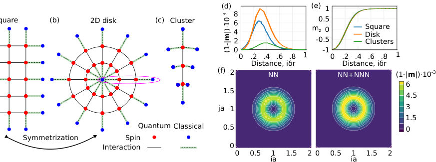
<figcaption class="paper-figure-caption"><b>Fig 1.</b> FIG. 1. Results of 2D DMRG and CMFA simulations for a quantum skyrmion. The positions of quantum (red) and classical (blue) spins and their couplings are shown for square (panel a), disk (b), and cluster (c) geometries. (Panel d) Change of magnetization length |m| as a function of the distance r to the skyrmion center obtained for the geometries (a)-(c). (Panel e) Magnetization mz as a function of r for cases (a)-(c). (Panel f) Distribution of the magnetization length |m| for the cases when only nearest-neighbor (NN) spin interactions are taken into account (left) and with inclusion of next-nearest-neighbor (NNN) spin interactions (right).</figcaption>
</figure>
<figure class="paper-figure-card">
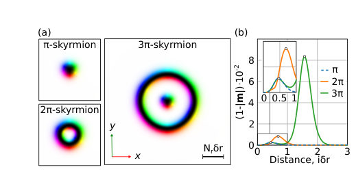
<figcaption class="paper-figure-caption"><b>Fig 2.</b> FIG. 2. Quantum kπ-Skyrmions. Panel (a): Examples of kπ-skyrmions stabilized in the system of size 48 spins with δr = 1/16 and δϕ = 2π/16. Spin directions are indicated by the following color code: white for up, black for down, and a red–green–blue color scheme for in-plane spin compo- nents [45]. Panel (b): Distribution of magnetization as a func- tion of the distance to the skyrmion center obtained with the CFM approach. Maxima points are denoted by hollow circles, and the corresponding values for π-, 2π-, and 3π-skyrmions are 0.0028, 0.0085 and 0.083, respectively.</figcaption>
</figure>
<figure class="paper-figure-card">
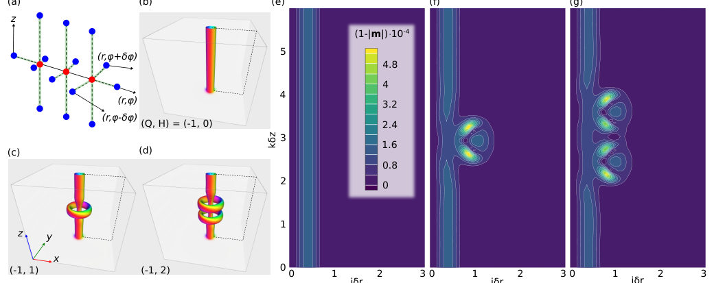
<figcaption class="paper-figure-caption"><b>Fig 3.</b> FIG. 3. Quantum Hopfion rings. Panel (a): positions of quantum (red) and classical (blue) spins and their couplings for the cluster in the cylinder geometry – a 3D extension of the one provided in Fig. 1(c). Panels (b), (c) and (d): skyrmion strings with zero, one and two hopfion rings, respectively, stabilized at h = 0.4, u = 0.3 in the box of size (96)3, with a = 1/16 in the model (2). Panels (e)-(g): magnetization distribution obtained with the CFMA in the rectangular region bounded by the skyrmion string core spins and dashed lines in panels (b)-(d).</figcaption>
</figure>
<figure class="paper-figure-card">
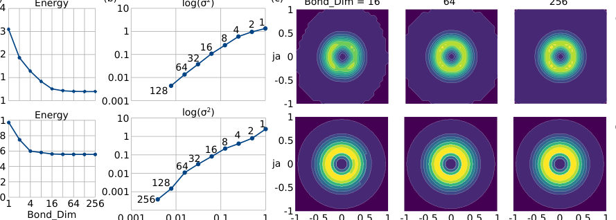
<figcaption class="paper-figure-caption"><b>Fig 4.</b> FIG. 4. Convergence analysis of 2D DMRG simulations for a skyrmion. Upper (lower) panel (a) skyrmion energy and (b) variance, (13) for skyrmion as a function of bond dimensions in square (disk) geometry. (c) corresponding magnetization length distribution for selected bond dimensions 16, 64 and 256.</figcaption>
</figure>
</div>

<p><strong>Summary.</strong> This work investigates the quantum behavior of magnetic spin textures like skyrmions and hopfion rings using advanced computational techniques. By employing the Cluster Mean-Field Approximation alongside DMRG, the authors overcome dimensionality limitations to accurately calculate quantum fluctuations in these complex topological states. The results highlight where classical micromagnetics breaks down, suggesting necessary extensions to the theoretical framework.</p>
<p><strong>Why it may be interesting.</strong> While focused on magnetism, the heavy reliance on DMRG, cluster mean-field theory, and mapping complex Hamiltonians onto solvable 1D/2D effective models makes this highly relevant for developing numerical techniques applicable to other quantum many-body systems.</p>
<details>
<summary>Detailed structure</summary>
<p><strong>Main problem.</strong> The study focuses on accurately computing the quantum properties of topologically non-trivial spin textures, such as skyrmions and hopfion rings.</p>
<p><strong>Main result.</strong> The Cluster Mean-Field Approximation (CMFA) successfully computes quantum fluctuations in large spin textures and accesses metastable states, revealing limitations in purely classical micromagnetic models.</p>
<p><strong>Method.</strong> The authors combine the CMFA with DMRG simulations by exploiting cylindrical symmetry to reduce the problem to an effective 1D chain solvable via Matrix Product States.</p>
<p><strong>Model / system.</strong> The system is modeled using a Heisenberg Hamiltonian describing chiral magnets, analyzed in both discrete lattice forms and continuum approximations adapted for cylindrical coordinates.</p>
<p><strong>Key observables.</strong> Topological indices (Q, H), local variation of magnetization length |m|, quantum fluctuations, and zero-mode dynamics of the Hopfion ring.</p>
<p><strong>Important parameters / regimes.</strong> The analysis explores intermediate regimes between purely classical and fully quantum spin textures; key parameters include exchange stiffness (A), DMI constant (D), and anisotropy (K).</p>
<p><strong>Assumptions / limitations.</strong> The CMFA treats inter-cluster interactions at a mean-field level, which is an approximation that may underestimate the true quantum fluctuations.</p>
<p><strong>Figures summary.</strong> Figures illustrate DMRG/CMFA results for skyrmion profiles in various geometries and show convergence analysis (energy, variance) of 2D DMRG simulations as bond dimension increases.</p>
<p><strong>Paper structure.</strong> The paper moves from defining the continuum micromagnetic Hamiltonian to adapting it into cylindrical coordinates. It then details the application of CMFA combined with DMRG to simulate quantum fluctuations in skyrmion and hopfion ring structures, concluding with comparisons to classical limits.</p>
</details>
<details>
<summary>Abstract</summary>
<p>We study the quantum properties of two- and three-dimensional spin textures -- $kπ$-skyrmions and hopfion rings -- within the cluster mean-field approximation (CMFA). By combining the CMFA with a symmetrization procedure, we achieve two key advances: the accurate computation of quantum fluctuations in large spin textures and reliable access to metastable states. These challenges are generally insurmountable using standard methods, which are severely limited by the curse of dimensionality and typically restricted to ground-state properties. Exploiting the cylindrical symmetry of the studied magnetic configurations, we construct one-dimensional chain-like clusters that can be efficiently simulated using the density matrix renormalization group method, while inter-cluster interactions are treated at the mean-field level. The resulting spatial profiles of quantum features such as the local variation of the magnetization length in hopfion rings reveal limitations of the classical micromagnetic model and indicate the necessity of its extension. We demonstrate that the recently proposed regularized micromagnetic equation provides a suitable framework for this purpose.</p>
</details>
<p><sub><a href="#top">↑ back to top</a></sub></p>

<p><a id="paper-2607.08822"></a></p>
<h3 id="energetics-of-fractional-anomalous-hall-crystals-in-rhombohedral-graphene"><a href="http://arxiv.org/abs/2607.08822v1">Energetics of fractional anomalous Hall crystals in rhombohedral graphene</a></h3>
<p><strong>Authors:</strong> Félix Desrochers, Ashvin Vishwanath<br>
<strong>Type:</strong> theory · <strong>Category:</strong> strongly correlated electrons · <strong>PDF:</strong> <a href="https://arxiv.org/pdf/2607.08822v1">https://arxiv.org/pdf/2607.08822v1</a><br>
<strong>Analysis basis:</strong> full PDF text, analyzed in chunks
<strong>Topic relevance:</strong> <code>analog quantum simulation</code> <strong>3/5</strong> · <code>methods for driven-dissipative</code> <strong>3/5</strong> · <code>Keldysh / 2PI / non-Gaussian methods</code> <strong>2/5</strong> · <code>exotic spin models in light-matter</code> <strong>1/5</strong> · <code>non-equilibrium dynamics</code> <strong>1/5</strong></p>
<div class="figure-strip-hint">↔ Scroll figures horizontally</div>
<div class="paper-figures-scroll">
<figure class="paper-figure-card">
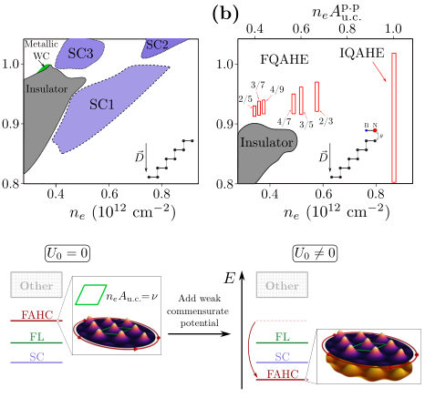
<figcaption class="paper-figure-caption"><b>Fig 1.</b> FIG. 1. Schematic phase diagram and commensu- ration mechanism of QAHE stabilization. (a) Moiré- less R5G, where superconductivity (SC) and metallic Wigner- crystal behavior have been reported [1, 2]. (b) R5G aligned with an hBN substrate at a twist angle of 0.77◦in the strong- displacement-field regime, where integer and fractional quan- tum anomalous Hall effects (QAHE) have been observed [3, 4]. (c) The mechanism proposed in this work. In the continuum (U0 = 0), a fractional anomalous Hall crystal (FAHC) at fill- ing neAu.c. = ν &lt; 1 can be energetically competitive with nearby candidates such as the Fermi liquid, superconductor, or other ordered states. A weak periodic potential, U0 ̸=...</figcaption>
</figure>
<figure class="paper-figure-card">
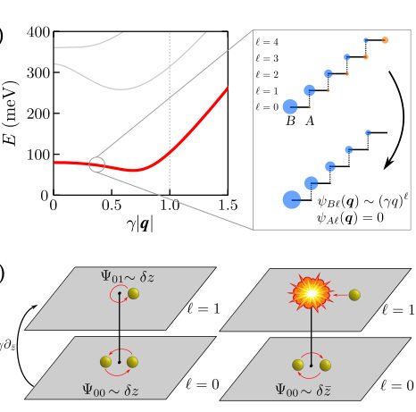
<figcaption class="paper-figure-caption"><b>Fig 2.</b> FIG. 2. Illustration of the ideal limit of RNG and many-body constraint in the presence of contact in- teractions. (a) Dispersion of R5G in the presence of a finite displacement field, where the inset presents the orbital oc- cupation in the γ|q| ≲1 regime (top) and in the ideal limit (bottom). (b) Contact interaction constraint. For a chiral zero between a pair of particles (left), the zero remains for any layer component. For an achiral zero of low order, wavefunc- tions with higher-layer components can have a non-vanishing amplitude for configurations with electrons at the same loca- tion.</figcaption>
</figure>
<figure class="paper-figure-card">
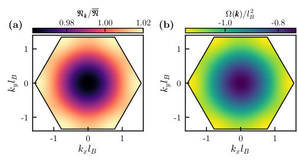
<figcaption class="paper-figure-caption"><b>Fig 3.</b> FIG. 3. Momentum-space geometry of the emergent ideal AHC mini-band in the first Brillouin zone. (a) Normalization factor Nk relative to its Brillouin zone average N. (b) Berry curvature distribution Ω(k)/l2 B. Both panels use Nℓ= 5 and γ/lB = 0.3.</figcaption>
</figure>
<figure class="paper-figure-card">
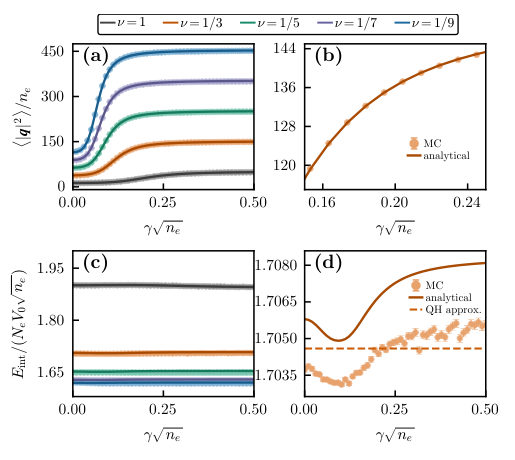
<figcaption class="paper-figure-caption"><b>Fig 4.</b> FIG. 4. Monte Carlo benchmarks for the energet- ics of AHC variational states. Panels (a,b) show the kinetic-energy moment ⟨|q|2⟩/ne. Panels (c,d) show the in- teraction energy per particle, in units of V0√ne, for a dual- gated screened interaction with gate distance ds = 1/√ne. Results are for a triangular crystal in the Nℓ= 4 ideal par- ent band, including the IAHC at ν = 1 and Laughlin FAHCs at ν = 1/3, 1/5, 1/7, 1/9. Markers are direct MC estimates, solid curves are the semi-analytic AHC–QH estimate, and dashed curves in the interaction-energy panels are the zeroth- harmonic QH approximation. Panels (b,d) show zoomed-in views of the ν = 1/3 data from panels (a,c) respectively.</figcaption>
</figure>
<figure class="paper-figure-card">
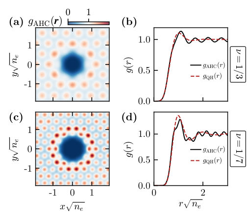
<figcaption class="paper-figure-caption"><b>Fig 5.</b> FIG. 5. Pair correlations of the AHC variational state for Nℓ= 2 and γ√ne = 0.5, evaluated by Monte Carlo. Panels (a,c) show the two-dimensional pair- correlation function gAHC(r) for ν = 1/3 and ν = 1/7, re- spectively, with distances measured in units of 1/√ne. Panels (b,d) show the corresponding radial averages gAHC(r), com- pared with the Laughlin quantum Hall result gQH(r) at the same filling.</figcaption>
</figure>
</div>

<p><strong>Summary.</strong> The paper investigates Fractional Anomalous Hall Crystals in rhombohedral graphene by calculating their total energy using Monte Carlo simulations. The authors demonstrate that these topologically ordered states are energetically viable candidates compared to simpler phases like Fermi liquids. This work supports a continuum-and-interactions-first approach for realizing fractional quantum anomalous Hall physics in real materials.</p>
<p><strong>Why it may be interesting.</strong> This work provides a concrete, materials-based pathway (graphene moiré systems) to realize exotic topological states like FAHCs, bridging abstract condensed matter theory with solid-state material physics relevant to quantum phenomena.</p>
<details>
<summary>Detailed structure</summary>
<p><strong>Main problem.</strong> The primary goal is to establish Fractional Anomalous Hall Crystals (FAHCs) as energetically competitive candidate states in a realistic physical setting, moving beyond purely theoretical models.</p>
<p><strong>Main result.</strong> FAHCs were found to be energetically competitive with integer anomalous Hall crystals and Fermi liquids. Their stability is governed by the interplay between interaction energy inherited from a parent Quantum Hall liquid and kinetic energy favoring specific crystal periods.</p>
<p><strong>Method.</strong> The study employs Monte Carlo simulations and semi-analytic evaluations using variational wavefunctions derived from ideal continuum models, followed by restoring realistic dispersion and screened Coulomb interactions.</p>
<p><strong>Model / system.</strong> The system studied is rhombohedral pentalayer graphene (R5G) or R5G/hBN heterostructures. The physics involves modeling topological order similar to the fractional quantum Hall effect without an external magnetic field, characterized by spontaneous breaking of continuous translation symmetry.</p>
<p><strong>Key observables.</strong> Energetic competitiveness relative to IAHCs and FLs; anomalous Hall response (integer vs. fractional); stability dependence on twist angle and displacement field.</p>
<p><strong>Important parameters / regimes.</strong> Filling fraction ($
u$), twist angle, displacement field ($u_D$), and the strength of the periodic potential ($U_0$).</p>
<p><strong>Assumptions / limitations.</strong> The analysis relies on using ideal continuum models to generate variational wavefunctions before incorporating physical dispersion and interactions; approximations are used in constructing the AHC wavefunctions.</p>
<p><strong>Figures summary.</strong> Figure 1 schematically shows how a weak periodic potential can pin an FAHC at fractional filling ($
u &lt; 1$) below competing states. Other figures compare energy calculations (MC vs. analytical) for kinetic and interaction energies across various parameters.</p>
<p><strong>Paper structure.</strong> The paper progresses by first establishing the theoretical framework using ideal continuum models to define AHC wavefunctions, then performing detailed energy evaluations via Monte Carlo simulations incorporating realistic interactions, and finally mapping out the stability phase diagram based on these energetic comparisons.</p>
</details>
<details>
<summary>Abstract</summary>
<p>Fractional anomalous Hall crystals (FAHCs) replicate the topological order of the fractional quantum Hall effect in the continuum without requiring any external magnetic field. They spontaneously break continuous translation symmetry like a Wigner crystal, but are distinguished by each unit cell holding a fixed fractional number of electrons. Until now, these states have been confined to theoretical speculation or engineered models, leaving open the question of whether they can plausibly emerge in actual physical systems. Here, we establish them as energetically competitive candidate states in a realistic material setting. We study rhombohedral pentalayer graphene (R5G) with variational wavefunctions that are exact zero modes of a recently proposed ideal model of R5G. We evaluate their energies using Monte Carlo, after reinstating realistic dispersion and screened Coulomb interactions. We find FAHCs to be energetically competitive with integer anomalous Hall crystals and Fermi liquids, and their stability follows a simple principle. Each crystal maps onto a parent quantum Hall liquid that fixes its interaction energy, while the kinetic energy favors crystal periods that match the finite-momentum minimum of R5G's Mexican-hat dispersion. A weak periodic potential can then selectively lower and pin the commensurate fractional crystals. This picture predicts how the integer and fractional quantum anomalous Hall stability windows evolve with twist angle and displacement field, which we compare to recent experiments. These results support a continuum-and-interactions-first route to fractional anomalous Hall states in rhombohedral graphene.</p>
</details>
<p><sub><a href="#top">↑ back to top</a></sub></p>

<p><a id="paper-2607.09615"></a></p>
<h3 id="fluctuation-theorems-for-thermally-isolated-driven-quantum-systems-nonadiabaticity-excess-work-and-strong-inequalities"><a href="http://arxiv.org/abs/2607.09615v1">Fluctuation theorems for thermally isolated driven quantum systems: nonadiabaticity, excess work and strong inequalities</a></h3>
<p><strong>Authors:</strong> J. V. M. Steimetz, M. Campisi, M. V. S. Bonança<br>
<strong>Type:</strong> theory · <strong>Category:</strong> statistical mechanics · <strong>PDF:</strong> <a href="https://arxiv.org/pdf/2607.09615v1">https://arxiv.org/pdf/2607.09615v1</a><br>
<strong>Analysis basis:</strong> full PDF text, analyzed in chunks
<strong>Topic relevance:</strong> <code>non-equilibrium dynamics</code> <strong>3/5</strong> · <code>non-equilibrium universality</code> <strong>2/5</strong> · <code>Keldysh / 2PI / non-Gaussian methods</code> <strong>1/5</strong> · <code>correlated / nonlocal dissipation</code> <strong>1/5</strong> · <code>driven-dissipative phase transition</code> <strong>1/5</strong> · <code>entanglement &amp; information structure</code> <strong>1/5</strong> · <code>methods for driven-dissipative</code> <strong>1/5</strong></p>
<div class="figure-strip-hint">↔ Scroll figures horizontally</div>
<div class="paper-figures-scroll">
<figure class="paper-figure-card">
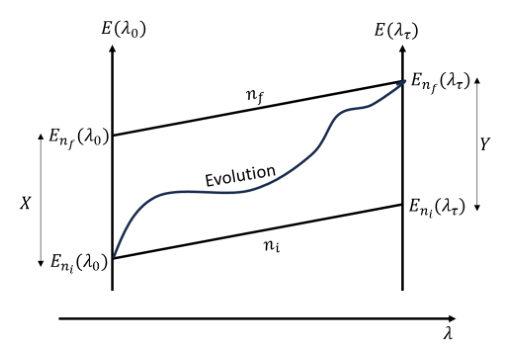
<figcaption class="paper-figure-caption"><b>Fig 1.</b> FIG. 1: Illustration of the definition of X and Y in the quantum setting.</figcaption>
</figure>
<figure class="paper-figure-card">
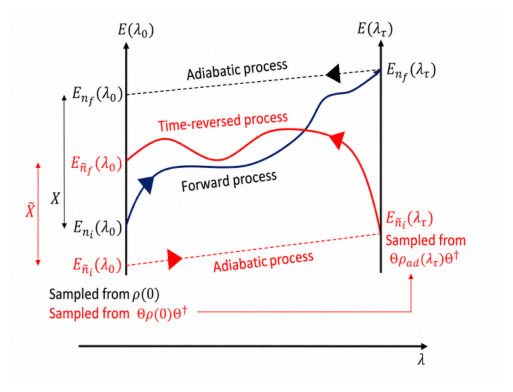
<figcaption class="paper-figure-caption"><b>Fig 2.</b> FIG. 2: Illustration of the processes and quantities involved in the DFT.</figcaption>
</figure>
<figure class="paper-figure-card">
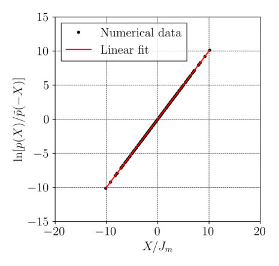
<figcaption class="paper-figure-caption"><b>Fig 3.</b> FIG. 3: Numerical verification of the DFT for X, Eq. (26). The calculations were performed on the 4-spin Ising chain with the Hamiltonian of Eq. (89), protocol of Eq. (90), initial inverse temperature β = J−1 m and process duration τ = ℏ/Jm.</figcaption>
</figure>
<figure class="paper-figure-card">
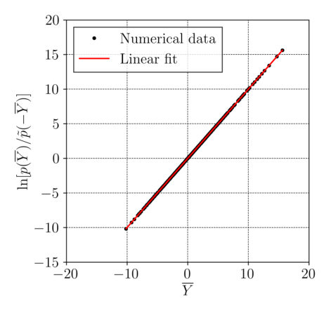
<figcaption class="paper-figure-caption"><b>Fig 4.</b> FIG. 4: Numerical verification of the DFT for Y , Eq. (46). The calculations were performed on the 4-spin Ising chain with the Hamiltonian of Eq. (89), protocol of Eq. (90), initial inverse temperature β = J−1 m and process duration τ = ℏ/Jm.</figcaption>
</figure>
<figure class="paper-figure-card">
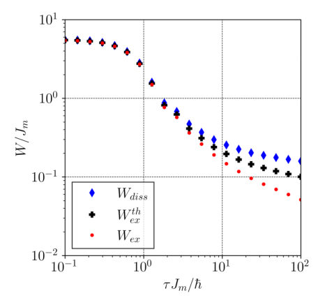
<figcaption class="paper-figure-caption"><b>Fig 5.</b> FIG. 6: Illustration of Eq. (82), where Wex = W −Wad, W th ex = W −Wise, and Wdiss = W −∆F are plotted as functions of the process duration τ for the 12-spin non-integrable Ising chain whose Hamiltonian is given in Eq. (89). The protocol for the variation of λ is the one in Eq. (90) and the initial temperature is β = J−1 m .</figcaption>
</figure>
</div>

<p><strong>Summary.</strong> The paper extends fluctuation theorems to thermally isolated quantum systems by deriving detailed and integral forms. It establishes quantitative links between non-equilibrium work fluctuations and thermodynamic quantities like excess work and relative entropy. This provides a rigorous, quantum mechanical framework for understanding the minimal energy cost associated with driving quantum processes.</p>
<p><strong>Why it may be interesting.</strong> This work provides rigorous quantum generalizations of fundamental theorems like the Second Law for driven systems, which is crucial for understanding energy dissipation and irreversibility in open or isolated quantum dynamics.</p>
<details>
<summary>Detailed structure</summary>
<p><strong>Main problem.</strong> The primary goal is deriving detailed and integral fluctuation theorems for thermally isolated, driven quantum systems to establish thermodynamic inequalities stronger than those provided by the Jarzynski equality.</p>
<p><strong>Main result.</strong> The authors derive relationships connecting the average of work fluctuations to physical quantities like nonadiabaticity (relative entropy) and excess work, establishing a minimal work principle for irreversible processes.</p>
<p><strong>Method.</strong> The analysis employs quantum fluctuation theorems, utilizing time-reversal symmetry ($\Theta$) and defining stochastic variables based on energy measurements at initial and final states.</p>
<p><strong>Model / system.</strong> The system is a quantum mechanical entity governed by a time-dependent Hamiltonian $H(\lambda_t)$, evolving from an initial Gibbs state $
ho(0) = \Pi_{eta}(\lambda_0)$ under external driving protocols.</p>
<p><strong>Key observables.</strong> Work ($X$), nonadiabaticity parameter ($A$), excess work ($    ext{W}_{    ext{ex}}$), and the relative entropy $D[\dots]$.</p>
<p><strong>Important parameters / regimes.</strong> Temperature $eta$, time-dependent parameters $\lambda(t)$, and the initial/final Hamiltonian eigenstates.</p>
<p><strong>Assumptions / limitations.</strong> The derivation of key results relies on highly restrictive conditions (e.g., Eq. 96) which are not generally valid, and assumptions about the nature of entropy production in isolated systems.</p>
<p><strong>Figures summary.</strong> Figure 1 illustrates the definition of stochastic energy measurements $X$ and $Y$. Figure 2 details the processes and quantities involved in deriving the detailed fluctuation theorem for work.</p>
<p><strong>Paper structure.</strong> The paper builds upon Jarzynski's framework by deriving both detailed and integral fluctuation theorems. It then connects the averages of these fluctuations to nonadiabaticity and excess work, culminating in a discussion of the strongest attainable thermodynamic minimal work principle.</p>
</details>
<details>
<summary>Abstract</summary>
<p>We expand on the ideas developed by C. Jarzynski in Physica A 552, 122077 (2020), where an integral fluctuation theorem was derived with the aim of obtaining thermodynamic inequalities stronger than those implied by the Jarzynski equality. Restricting ourselves to the quantum setting, we derive the corresponding detailed fluctuation theorem and additional detailed and integral fluctuation theorems; we also provide a clear physical interpretation of the stochastic quantities defined in the previous reference. Furthermore, we show that their averages are given by the nonadiabaticity parameter (i.e., the relative entropy between the final state after a finite-time driving protocol and the corresponding adiabatically evolved state) and the excess work (also known as inner friction). We elaborate on the inequalities derived from the fluctuation theorems and discuss their connection to irreversibility and formulations of the Second Law.</p>
</details>
<p><sub><a href="#top">↑ back to top</a></sub></p>

<p><a id="paper-2607.09534"></a></p>
<h3 id="higher-order-programs-with-indefinite-causal-orders-a-linear-approach-to-coherent-control-of-quantum-processes"><a href="http://arxiv.org/abs/2607.09534v1">Higher-Order Programs with Indefinite Causal Orders: a Linear Approach to Coherent Control of Quantum Processes</a></h3>
<p><strong>Authors:</strong> Kathleen Barsse, Romain Péchoux, Simon Perdrix<br>
<strong>Type:</strong> theory · <strong>Category:</strong> quantum information and computing · <strong>PDF:</strong> <a href="https://arxiv.org/pdf/2607.09534v1">https://arxiv.org/pdf/2607.09534v1</a><br>
<strong>Analysis basis:</strong> full PDF text, analyzed in chunks
<strong>Topic relevance:</strong> <code>measurement-induced transitions</code> <strong>3/5</strong> · <code>quantum measurements</code> <strong>3/5</strong> · <code>Keldysh / 2PI / non-Gaussian methods</code> <strong>1/5</strong> · <code>correlated / nonlocal dissipation</code> <strong>1/5</strong> · <code>driven-dissipative phase transition</code> <strong>1/5</strong> · <code>methods for driven-dissipative</code> <strong>1/5</strong></p>
<div class="figure-strip-hint">↔ Scroll figures horizontally</div>
<div class="paper-figures-scroll">
<figure class="paper-figure-card">
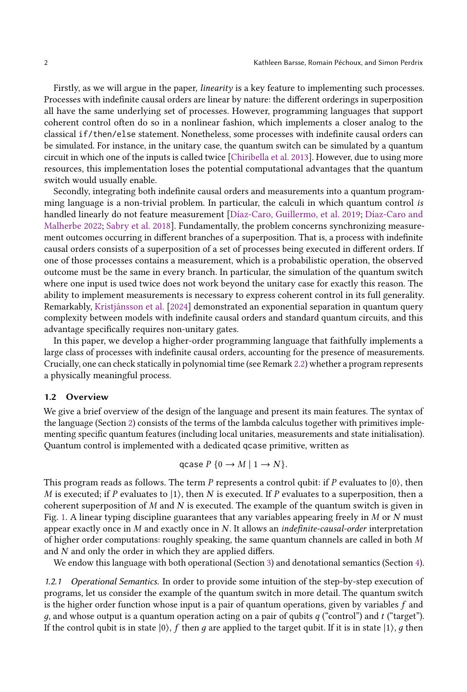
<figcaption class="paper-figure-caption"><b>Fig 1.</b> Low-resolution page preview, page 2</figcaption>
</figure>
<figure class="paper-figure-card">
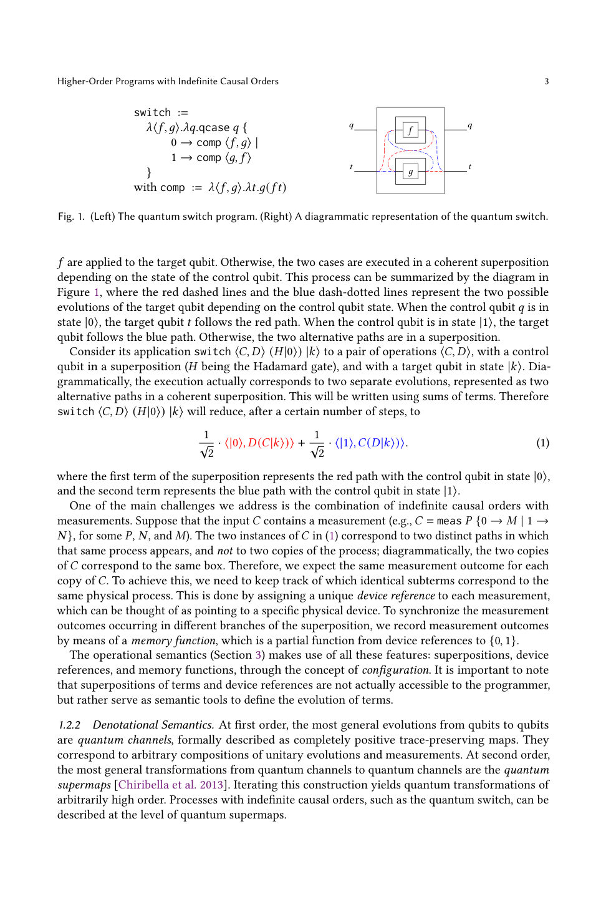
<figcaption class="paper-figure-caption"><b>Fig 2.</b> Low-resolution page preview, page 3</figcaption>
</figure>
<figure class="paper-figure-card">
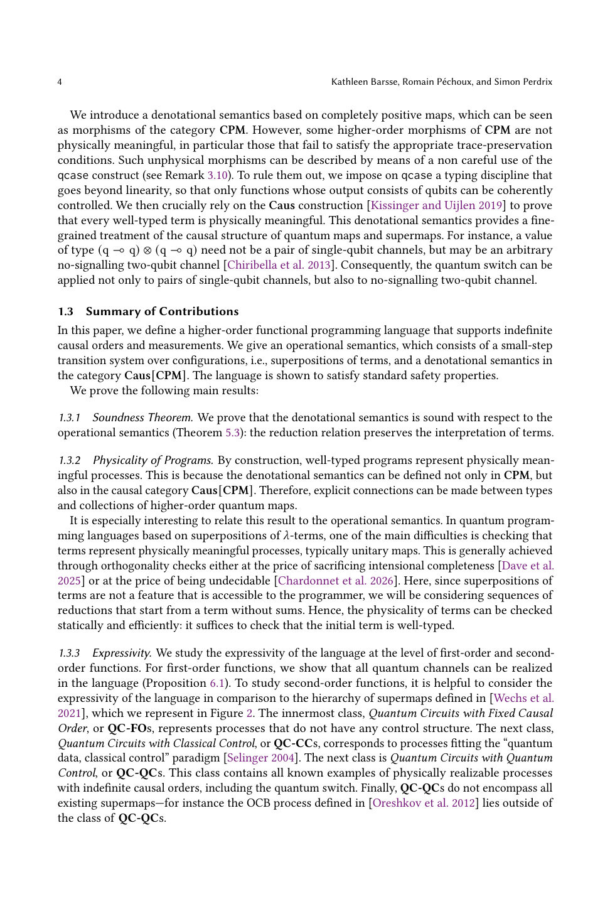
<figcaption class="paper-figure-caption"><b>Fig 3.</b> Low-resolution page preview, page 4</figcaption>
</figure>
<figure class="paper-figure-card">
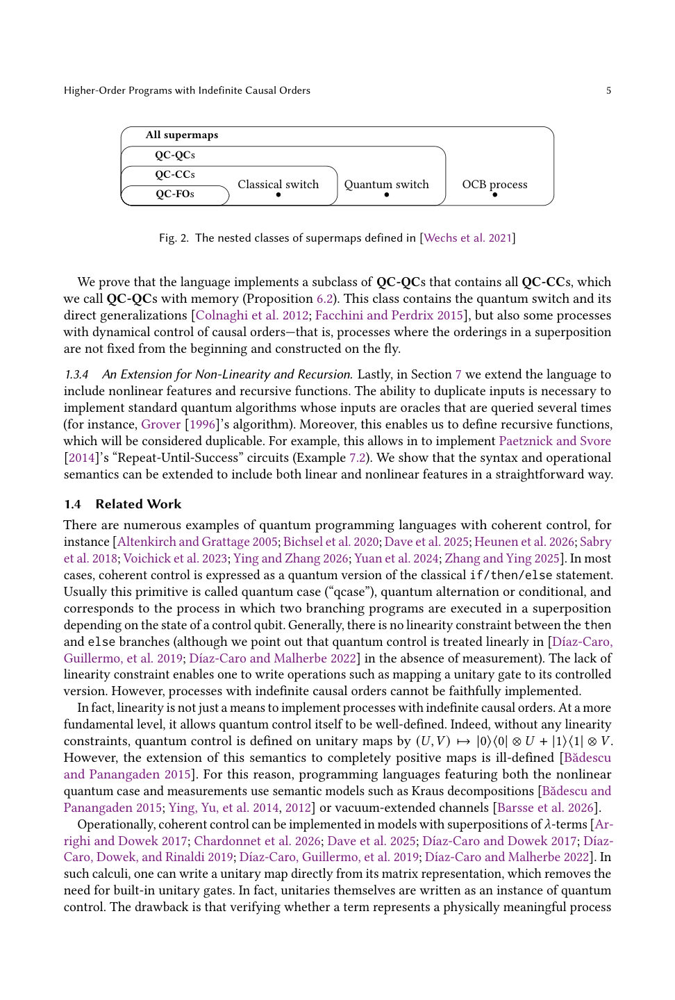
<figcaption class="paper-figure-caption"><b>Fig 4.</b> Low-resolution page preview, page 5</figcaption>
</figure>
<figure class="paper-figure-card">
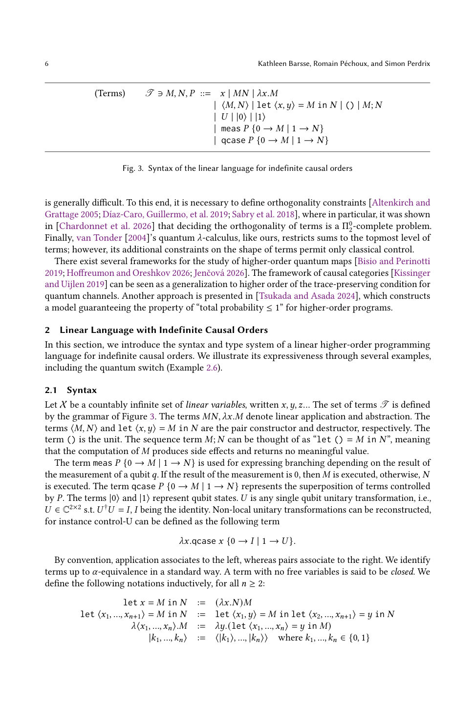
<figcaption class="paper-figure-caption"><b>Fig 5.</b> Low-resolution page preview, page 6</figcaption>
</figure>
</div>

<p><strong>Summary.</strong> This paper introduces a novel higher-order quantum functional language designed to accurately model processes with Indefinite Causal Orders (ICOs), such as the quantum switch. It achieves this by defining its semantics within the causal category Caus[CPM], ensuring that every well-typed program corresponds to a physically realizable quantum process. This provides a powerful theoretical tool for advancing quantum computation beyond unitary constraints.</p>
<p><strong>Why it may be interesting.</strong> For theoretical physicists working on open quantum systems or quantum computation, this work provides a mathematically rigorous tool to model non-unitary, context-dependent quantum operations (like those involving measurement) that are crucial for understanding realistic physical implementations beyond simple unitary evolution.</p>
<details>
<summary>Detailed structure</summary>
<p><strong>Main problem.</strong> The core problem is developing a quantum programming language capable of faithfully modeling processes with Indefinite Causal Orders (ICOs), especially when these orders are combined with measurements, which existing languages fail to capture fully.</p>
<p><strong>Main result.</strong> The authors introduce a higher-order functional language whose semantics are defined in the causal category Caus[CPM], proving that well-typed programs correspond to physically meaningful quantum processes and can express complex structures like the quantum switch.</p>
<p><strong>Method.</strong> They develop both an operational (small-step) and denotational semantics, using advanced categorical tools (completely positive maps and the Causal Category construction) to rigorously enforce physical constraints beyond simple linearity.</p>
<p><strong>Model / system.</strong> The model is a theoretical quantum computation framework dealing with general quantum channels and supermaps. Key concepts include ICOs, which allow superposition over operation orderings, and the necessity of tracking measurement outcomes across these superposed branches.</p>
<p><strong>Key observables.</strong> Physical meaning of computed processes; successful synchronization of measurement outcomes across superposed computational paths.</p>
<p><strong>Important parameters / regimes.</strong> The structure of quantum channels (CPTP maps) and the complexity level (first-order vs. second-order operations).</p>
<p><strong>Assumptions / limitations.</strong> The framework assumes that physical reality can be modeled by processes whose semantics are defined within the causal category Caus[CPM], requiring a typing discipline beyond simple linearity.</p>
<p><strong>Figures summary.</strong> Figures illustrate the quantum switch program structure, the syntax of the extended language (including 'meas' and 'qcase'), and the formal definitions for both operational reduction rules and denotational semantic components.</p>
<p><strong>Paper structure.</strong> The paper builds from identifying the limitations of current languages to introducing a novel higher-order functional language. It then rigorously defines its semantics using advanced category theory, proves soundness between operational and denotational interpretations, and finally demonstrates the language's expressive power by implementing known quantum circuits with memory.</p>
</details>
<details>
<summary>Abstract</summary>
<p>Processes with indefinite causal orders (ICOs), such as the quantum switch, are higher-order quantum processes that superpose the order in which quantum operations are performed. Such coherent control yields computational advantages but is not faithfully captured by existing quantum programming languages: either they are restricted to the unitary case, and thus cannot combine ICOs with measurement, or they treat coherent control nonlinearly. In both cases, they do not realize the full computational power of ICOs. We introduce a higher-order quantum functional language that supports general quantum computation, not merely the permutation of channels, and whose linear type system allows quantum control to be well-defined beyond the unitary case, on arbitrary quantum channels. We equip this language with a small-step operational semantics that synchronizes measurement outcomes across superposed branches, using device references and a memory function. We also give a denotational semantics by means of completely positive maps. With linearity as the only constraint, some well-typed terms would denote unphysical maps. We therefore impose a typing discipline that goes beyond linearity, and interpret programs in the causal category Caus[CPM], under which every well-typed program is physically meaningful, a property that can be checked statically and efficiently. We prove soundness, and study the language's expressive power: it can express every quantum channel at first order, and at second order a large subclass of the so-called quantum circuits with quantum control (QC-QCs), containing the quantum switch. Last but not least, we show that this language is well-designed enough to be extended to the nonlinear setting with recursion.</p>
</details>
<p><sub><a href="#top">↑ back to top</a></sub></p>

<p><a id="paper-2607.09396"></a></p>
<h3 id="quantum-phases-in-endofullerene-zigzag-chains"><a href="http://arxiv.org/abs/2607.09396v1">Quantum phases in endofullerene zigzag chains</a></h3>
<p><strong>Authors:</strong> Tobias Serwatka, Muhammad Shaeer Moeed, Roger G. Melko, Pierre-Nicholas Roy<br>
<strong>Type:</strong> theory · <strong>Category:</strong> statistical mechanics · <strong>PDF:</strong> <a href="https://arxiv.org/pdf/2607.09396v1">https://arxiv.org/pdf/2607.09396v1</a><br>
<strong>Analysis basis:</strong> full PDF text, analyzed in chunks
<strong>Topic relevance:</strong> <code>analog quantum simulation</code> <strong>3/5</strong> · <code>exotic spin models in light-matter</code> <strong>3/5</strong> · <code>entanglement &amp; information structure</code> <strong>2/5</strong> · <code>Frenkel-Kontorova</code> <strong>1/5</strong> · <code>methods for driven-dissipative</code> <strong>1/5</strong></p>
<div class="figure-strip-hint">↔ Scroll figures horizontally</div>
<div class="paper-figures-scroll">
<figure class="paper-figure-card">
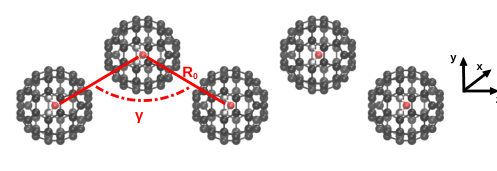
<figcaption class="paper-figure-caption"><b>Fig 1.</b> FIG. 1. Chain of endofullerene units. The configuration of the fullerene chain depends on R0, the distance of the centers of mass of neighboring cages and the chain angle γ ∈(60◦,180◦). At 180◦</figcaption>
</figure>
<figure class="paper-figure-card">
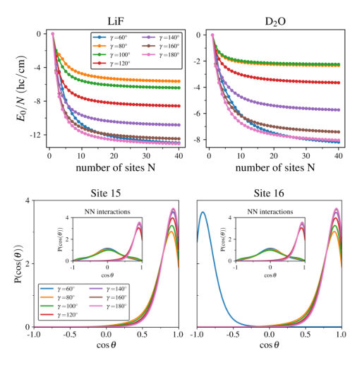
<figcaption class="paper-figure-caption"><b>Fig 2.</b> FIG. 2. (Upper panel) Energy per molecule for LiF@C60 chains with different γ. (Lower panel) Density distribution along cos(θ) of the two central sites in LiF@C60 chains with N = 30 and different γ. Insets: density distribution calculated for similar chains with only NN interactions.</figcaption>
</figure>
<figure class="paper-figure-card">
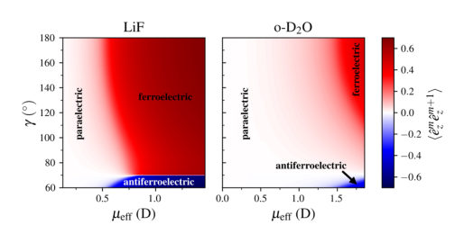
<figcaption class="paper-figure-caption"><b>Fig 3.</b> FIG. 3. Phase diagram of a LiF@C60 chain and a D2O chain with N = 20 each.</figcaption>
</figure>
<figure class="paper-figure-card">
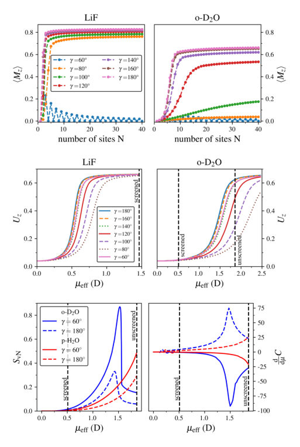
<figcaption class="paper-figure-caption"><b>Fig 4.</b> FIG. 4. (Upper panel) Axial, scaled polarization per cage of LiF@C60 and o-D2O chains at µeff = µunscreened. (Middle panel) Binder parameter of a LiF@C60 chain and a o-D2O chain with</figcaption>
</figure>
</div>

<p><strong>Summary.</strong> The research uses advanced DMRG simulations to map the quantum phase diagram of dipolar molecules confined in curved endofullerene chains. By varying the chain angle ($\gamma$), the system undergoes transitions between ferroelectric and antiferroelectric ordered states, demonstrating that geometry dictates complex magnetic ordering in nanoscale materials.</p>
<p><strong>Why it may be interesting.</strong> This work connects fundamental concepts from quantum magnetism (Néel ordering, frustration) with materials science by proposing that engineered carbon nanostructures can host tunable dipole-ordered quantum phases.</p>
<details>
<summary>Detailed structure</summary>
<p><strong>Main problem.</strong> The study investigates the quantum phases of dipolar molecules confined within bent (zigzag) endofullerene chains as a function of the chain's geometric bending angle ($\gamma$).</p>
<p><strong>Main result.</strong> The system exhibits rich dipole-ordered quantum phases, transitioning from ferroelectric to antiferroelectric order at $\gamma=60^\circ$, with specific molecular properties determining the stability of these orders.</p>
<p><strong>Method.</strong> Large-scale Density Matrix Renormalization Group (DMRG) calculations are employed to analyze the ground state and phase transitions across varying chain geometries.</p>
<p><strong>Model / system.</strong> The system models dipolar molecules ($  ext{LiF}$, $    ext{H}_2    ext{O}$) confined in quasi-1D zigzag chains formed by endofullerene cages. The physics is governed by dipole-dipole interactions and the geometric constraint imposed by the bending angle $\gamma$.</p>
<p><strong>Key observables.</strong> Polarization (axial/scaled), Binder parameter ($U_z$), von Neumann entanglement entropy, and correlation functions.</p>
<p><strong>Important parameters / regimes.</strong> Chain angle ($\gamma$) ranging from $60^\circ$ to $180^\circ$; effective dipole moment ($\mu_{	ext{eff}}$); nearest-neighbor vs. next-nearest-neighbor coupling strength.</p>
<p><strong>Assumptions / limitations.</strong> The analysis relies on treating the system via a Matrix Product State (MPS) representation suitable for DMRG calculations, and assumes that dipolar interactions are the dominant physics.</p>
<p><strong>Figures summary.</strong> Figures likely show polarization measurements confirming ferroelectric alignment ($\cos	heta \approx 1$) at large $\gamma$ and antiferroelectric anti-alignment ($\cos	heta \approx -1$) at $\gamma=60^\circ$, alongside Binder cumulant plots locating the quantum phase transition.</p>
<p><strong>Paper structure.</strong> The paper systematically analyzes different molecular species ($   ext{LiF}$, $    ext{o-D}_2  ext{O}$) across a range of bending angles, using DMRG to map out transitions between ferroelectric and antiferroelectric ordered states, paying special attention to the critical role of NNN interactions at $60^\circ$.</p>
</details>
<details>
<summary>Abstract</summary>
<p>We employ large-scale density matrix renormalization group calculations to study the quantum phases of dipolar molecules confined in bent (zigzag) endofullerene chains, as a function of the chain angle $γ$. For LiF, ferroelectric order persists across the full range $60^\circ < γ180^\circ$, with the critical effective dipole moment increasing as the chain bends and parallel alignment becomes less favorable. Near the equilateral configuration ($γ= 60^\circ$), geometric frustration drives a transition to an antiferroelectric Néel-ordered phase in which neighboring dipoles anti-align along the chain axis. We show that capturing this reorientation requires including dipolar couplings beyond the nearest-neighbor approximation, since next-nearest-neighbor interactions become equally strong at $γ= 60^\circ$. For confined water, o-D$_2$O reproduces both ordered phases, whereas p-H$_2$O -- owing to its large rotational constants -- develops no order at any chain angle despite the enhanced coordination of the bent geometry. Because a zigzag chain is the narrowest stripe of a two-dimensional lattice, these results suggest that engineered endofullerene layers could host a rich variety of dipole-ordered quantum phases beyond the ferroelectric ordering observed in previous work.</p>
</details>
<p><sub><a href="#top">↑ back to top</a></sub></p>

<p><a id="paper-2607.08829"></a></p>
<h3 id="magnetic-field-control-of-the-neel-vector-and-magnon-visibility-in-altermagnetic-mnte"><a href="http://arxiv.org/abs/2607.08829v1">Magnetic Field Control of the Néel Vector and Magnon Visibility in Altermagnetic MnTe</a></h3>
<p><strong>Authors:</strong> Tobias Weber, Niclas Heinsdorf, Shane Smolenski, Sawyer Beltz, Alexandre Ivanov, Andrea Piovano, Victor Mecoli, Sean Knapp, Ruiqi Tang, Amir Henderson, A. K. M. Ashiquzzaman Shawon, Taylor Pierce-James, Na Hyun Jo, Denis Karaiskaj<br>
<strong>Type:</strong> both · <strong>Category:</strong> strongly correlated electrons · <strong>PDF:</strong> <a href="https://arxiv.org/pdf/2607.08829v1">https://arxiv.org/pdf/2607.08829v1</a><br>
<strong>Analysis basis:</strong> full PDF text, analyzed in chunks
<strong>Topic relevance:</strong> <code>exotic spin models in light-matter</code> <strong>3/5</strong> · <code>spintronics-quantum-optics interface</code> <strong>3/5</strong> · <code>analog quantum simulation</code> <strong>2/5</strong> · <code>Keldysh / 2PI / non-Gaussian methods</code> <strong>1/5</strong></p>
<div class="figure-strip-hint">↔ Scroll figures horizontally</div>
<div class="paper-figures-scroll">
<figure class="paper-figure-card">
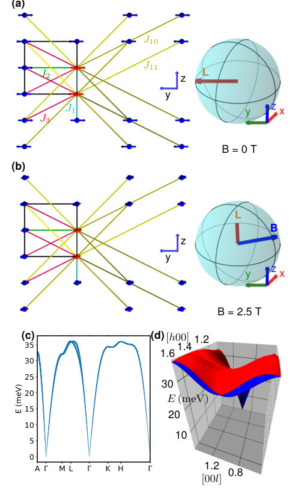
<figcaption class="paper-figure-caption"><b>Fig 1.</b> Figure 1. (a) and (b) Magnetic model for MnTe [46] showing only the magnetically active Mn sites in fractional coordinates (blue and red spheres) as well as the spin orientation (blue and red arrows) for (a) B = 0 T and (b) B = 2.5 T, viewing along the [100] direction. The inset shows the orientation of the Néel vector relative to the magnetic field in more detail. Antiferromagnetic couplings, J1, J3, are shown in red and turquoise, ferromagnetic couplings, J2, in green, and long- range altermagnetic couplings, J10 and J11, in light and dark yellow. The black rectangular area marks the boundaries of the nuclear unit cell. (c) Calculated magnon band structure along high-symmetry directions...</figcaption>
</figure>
<figure class="paper-figure-card">
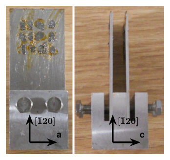
<figcaption class="paper-figure-caption"><b>Fig 2.</b> Figure 2. The co-aligned sample used for inelastic neutron scattering. It consists of the small MnTe single crystals glued to the front and back sides of two aluminum slabs. Left: front view, right: side view.</figcaption>
</figure>
<figure class="paper-figure-card">
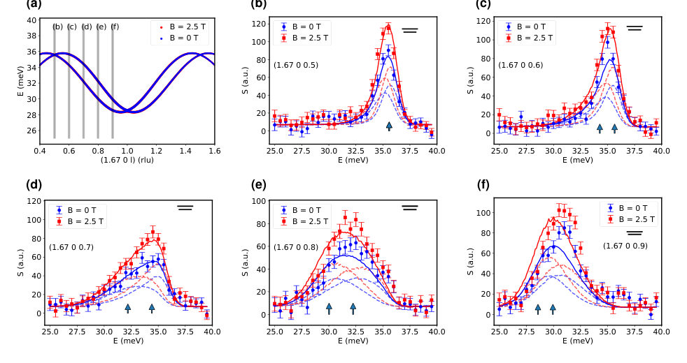
<figcaption class="paper-figure-caption"><b>Fig 3.</b> Figure 3. Field dependence of the Q = (1.67, 0, l) magnon dispersion of MnTe. Panel (a) shows the theoretical dispersion from the linear spin-wave model, which we based on [46], at zero field (blue curves) and at B = 2.5 T (red curves). The individual scan positions along the l direction are indicated as gray vertical bars. Panels (b)-(f) show the scan data for 0 T and 2.5 T (points) and instrumental resolution-convolutions of the theory (lines). The dashed blue (red) lines show the convoluted contributions of the two individual magnon modes on the total intensity, which is depicted as a solid blue (red) line. For the resolution-convolution at 0 T, the magnetic domains are averaged. The...</figcaption>
</figure>
<figure class="paper-figure-card">
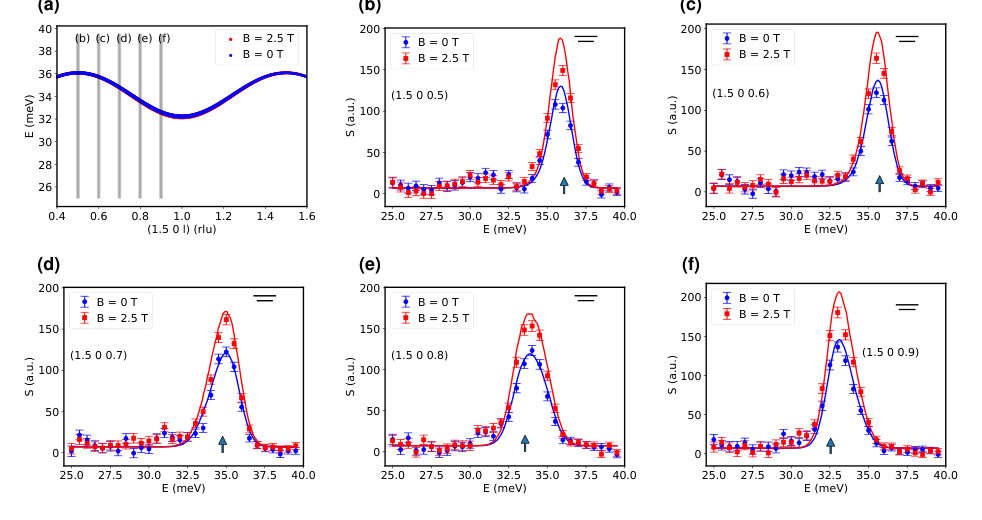
<figcaption class="paper-figure-caption"><b>Fig 4.</b> Figure 4. Field dependence of the Q = (1.5, 0, l) magnon dispersion of MnTe. Panel (a) shows the theoretical dispersion from the linear spin-wave model, which we based on [46], at zero field (blue curves) and at B = 2.5 T (red curves). The individual scan positions along the l direction are indicated as gray vertical bars. Panels (b)-(f) show the scan data for 0 T and 2.5 T (points) and instrumental resolution-convolutions of the theory (lines). For the resolution-convolution at 0 T, the magnetic domains are averaged. The arrows show the theoretical magnon energies without correcting for resolution effects. The black horizontal lines in the upper right corners indicate the incoherent and...</figcaption>
</figure>
<figure class="paper-figure-card">
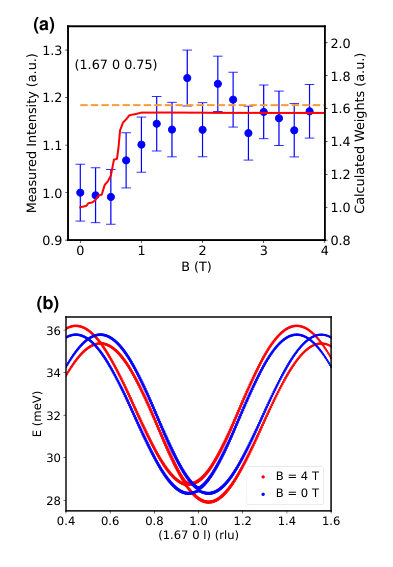
<figcaption class="paper-figure-caption"><b>Fig 5.</b> Figure 5. (a) Integrated intensity of the experimentally mea- sured Q = (1.67, 0, 0.75) magnon peaks vs. applied mag- netic field (blue points) and calculated theoretical weights of the magnon modes including the orthogonal projector (solid red line), as well as without projector (dashed orange line). The intensity saturates at about 1.5 T. (b) Comparison of the sole effect of the field on the dispersion without adapting the ground state.</figcaption>
</figure>
</div>

<p><strong>Summary.</strong> The authors used inelastic neutron scattering and spin-wave theory to study $\alpha$-MnTe, an altermagnet. They demonstrated that applying a magnetic field can continuously rotate the material's Néel vector while leaving the intrinsic magnon frequencies unchanged. This establishes MnTe as a promising platform for reconfiguring magnonic interactions using external fields.</p>
<p><strong>Why it may be interesting.</strong> This work provides a clean platform for studying tunable coupling mechanisms in magnetic excitations, which is relevant to understanding how external fields can modulate quantum interactions (like magnon-photon coupling) without destroying the underlying quantum state's frequency characteristics.</p>
<details>
<summary>Detailed structure</summary>
<p><strong>Main problem.</strong> The study investigates how an external magnetic field controls the Néel vector orientation and magnon visibility in altermagnetic $\alpha$-MnTe.</p>
<p><strong>Main result.</strong> The research shows that applying a field reorients the Néel vector without significantly changing the magnon energies or line widths, demonstrating a clear separation between the soft orientational degree of freedom and the robust chiral magnon spectrum.</p>
<p><strong>Method.</strong> The study combines linear spin-wave theory calculations with inelastic neutron scattering (INS) measurements to probe the magnetic excitations.</p>
<p><strong>Model / system.</strong> The system is altermagnetic $\alpha$-MnTe, which exhibits spin splitting without net magnetization. The theoretical model uses a Heisenberg Hamiltonian augmented by an external Zeeman term ($\mathcal{H}_Z$).</p>
<p><strong>Key observables.</strong> Magnon energies and line widths; spectral intensity measured via the transverse-momentum projection ($S_{\perp}^{xy}(Q, E)$).</p>
<p><strong>Important parameters / regimes.</strong> The ratio between the exchange scale and the applied Zeeman energy ($\mathcal{H}_Z$) is crucial, with the field remaining small compared to the dominant exchange interaction.</p>
<p><strong>Assumptions / limitations.</strong> It is assumed that secondary effects from Néel vector rotation dominate over direct Zeeman coupling to magnons due to the large exchange scale. Line widths are often noted as being resolution-limited.</p>
<p><strong>Figures summary.</strong> Figures illustrate the magnetic model and spin orientation change with field (Fig 1); INS measurements show magnon dispersion curves at different fields, confirming energy stability while intensity changes (Figs 3 &amp; 4); Figure 5 quantifies the increase in integrated magnon intensity due to ground state reorientation.</p>
<p><strong>Paper structure.</strong> The paper establishes the theoretical framework using spin-wave theory and then presents experimental INS data comparing zero-field and finite-field measurements. The core argument builds by showing that field changes primarily affect measurable intensity via projection rather than altering fundamental excitation frequencies or coherence times.</p>
</details>
<details>
<summary>Abstract</summary>
<p>Altermagnetic order gives rise to momentum-dependent spin splitting of electronic and magnonic excitations even in the absence of a net magnetization. Here, we investigate the magnetic field dependence of the spin-wave spectrum of altermagnetic $α$-MnTe using inelastic neutron scattering and linear spin-wave theory. An in-plane magnetic field continuously reorients the Néel vector by overcoming the weak crystalline anisotropy, while remaining small compared with the dominant exchange scale. We find that this reorientation leaves the magnon energies and line widths essentially unchanged, but strongly modifies the measured spectral intensity through the transverse-momentum projection. Our results demonstrate a clear separation between the soft orientational degree of freedom of the antiferromagnetic order and the robust exchange-dominated chiral magnon spectrum. This combination establishes $α$-MnTe as a platform for reconfigurable magnon coupling, in which external fields tune how excitations interact with polarized probes without substantially altering their frequency or coherence.</p>
</details>
<p><sub><a href="#top">↑ back to top</a></sub></p>

<p><a id="paper-2607.09470"></a></p>
<h3 id="symmetry-protected-pinch-curves-in-classical-spin-liquids"><a href="http://arxiv.org/abs/2607.09470v1">Symmetry-Protected Pinch Curves in Classical Spin Liquids</a></h3>
<p><strong>Authors:</strong> Takumi Fukushima, Han Yan<br>
<strong>Type:</strong> theory · <strong>Category:</strong> statistical mechanics · <strong>PDF:</strong> <a href="https://arxiv.org/pdf/2607.09470v1">https://arxiv.org/pdf/2607.09470v1</a><br>
<strong>Analysis basis:</strong> full PDF text, analyzed in chunks
<strong>Topic relevance:</strong> <code>exotic spin models in light-matter</code> <strong>3/5</strong> · <code>analog quantum simulation</code> <strong>2/5</strong> · <code>Keldysh / 2PI / non-Gaussian methods</code> <strong>1/5</strong> · <code>driven-dissipative phase transition</code> <strong>1/5</strong> · <code>methods for driven-dissipative</code> <strong>1/5</strong></p>
<div class="figure-strip-hint">↔ Scroll figures horizontally</div>
<div class="paper-figures-scroll">
<figure class="paper-figure-card">
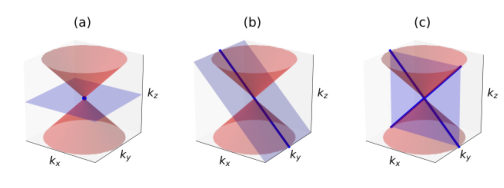
<figcaption class="paper-figure-caption"><b>Fig 1.</b> FIG. 1. Linear-quadratic intersections. A plane P1(k) = 0 intersects a quadratic cone P2(k) = 0. Dark blue denotes the resulting straight pinch lines. The three cases are (a) η &lt; 0, origin only; (b) η = 0, one tangent line; and (c) η &gt; 0, two distinct lines.</figcaption>
</figure>
<figure class="paper-figure-card">
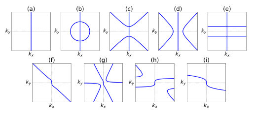
<figcaption class="paper-figure-caption"><b>Fig 2.</b> FIG. 3. Representative inversion-symmetric planar cu- bic curves arising from linear-(linear-plus-cubic) intersections. Reducible cases in panels (a)-(e) contain straight pinch lines, while irreducible cases in panels (f)-(i) give genuine curved pinch loci.</figcaption>
</figure>
<figure class="paper-figure-card">
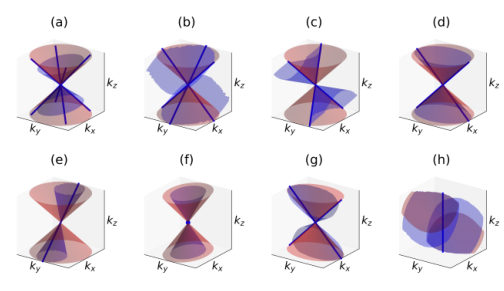
<figcaption class="paper-figure-caption"><b>Fig 3.</b> FIG. 2. Quadratic-quadratic intersections. Two quadratic cones P1(k) = 0 and P2(k) = 0 intersect along straight pinch lines, shown in dark blue.</figcaption>
</figure>
<figure class="paper-figure-card">
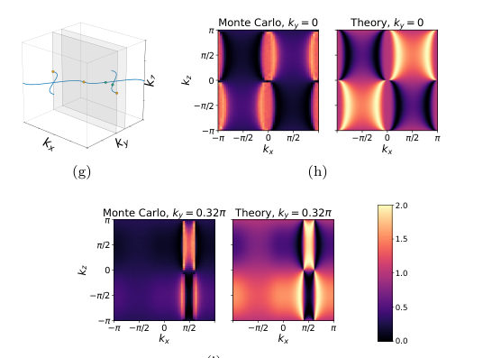
<figcaption class="paper-figure-caption"><b>Fig 4.</b> FIG. 4. Structure factors for the three lattice models. (a–c) plane-cone model of Eq. (10). Panel (a) shows the pinch curve in C11(k) as blue lines in reciprocal space. The gray cross- sections are the planes for the structure factor in panels (b,c). The dots mark the locations of the pinch curve in the re- spective cross-sections. (d–f) Double-cone model of Eq. (11), with CΣ(k) plotted. (g–i) Inhomogeneous pinch-curve model of Eq. (12), with CΣ(k) plotted.</figcaption>
</figure>
<figure class="paper-figure-card">
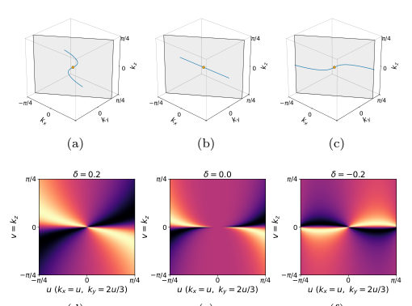
<figcaption class="paper-figure-caption"><b>Fig 5.</b> FIG. 5. Gauss-law transition for ∆1 = i(sin3 ky + δ sin kx), ∆2 = i sin kz. Panels (a,b,c) show the singular curve for δ = 0.2, 0, −0.2 and the momentum cuts; panels (d,e,f) show the corresponding structure factors. The leading local constraint changes from first order for δ ̸= 0 to third order at δ = 0.</figcaption>
</figure>
</div>

<p><strong>Summary.</strong> This work develops the theory of 'pinch-curve spin liquids,' where magnetic correlations exhibit singularities forming 1D curves in momentum space. By exploiting inversion symmetry, the constraints defining these curves are mathematically simplified and shown to be algebraically programmable. The research confirms that these systems undergo a novel Gauss-law transition while maintaining their singular geometric structure.</p>
<p><strong>Why it may be interesting.</strong> It provides a rigorous mathematical framework for understanding emergent topological features (singular loci) in classical spin systems, linking algebraic geometry directly to physical correlation functions.</p>
<details>
<summary>Detailed structure</summary>
<p><strong>Main problem.</strong> The paper introduces 'pinch-curve spin liquids,' generalizing classical spin liquids where correlation singularities form one-dimensional algebraic curves in momentum space.</p>
<p><strong>Main result.</strong> Symmetry protection reduces the singularity condition to two real polynomial constraints, allowing for algebraically programmable pinch loci that host an infrared Gauss-law transition.</p>
<p><strong>Method.</strong> The analysis combines continuum theory using polynomial constraint equations with lattice simulations (Monte Carlo) on spin models derived from generalized Gauss's laws.</p>
<p><strong>Model / system.</strong> Classical spin liquids are modeled by two-component scalar-charge Gauss's laws, leading to a Hamiltonian constrained by local operators in momentum space. The system is studied via its singular locus $\mathbf{Z}$ defined by the common zeros of these constraints.</p>
<p><strong>Key observables.</strong> The structure factor $\langle S_{a}(\mathbf{k})S_{b}(-\mathbf{k})
angle$ and the geometry of the pinch curve in momentum space ($\mathbf{k}$).</p>
<p><strong>Important parameters / regimes.</strong> Inversion symmetry ($I$), lattice size ($L=50$), and the degree/homogeneity of the polynomial constraints.</p>
<p><strong>Assumptions / limitations.</strong> The analysis often focuses on diagonal symmetry cases, simplifying the constraint to $P_1(\mathbf{k}) = P_2(\mathbf{k}) = 0$.</p>
<p><strong>Figures summary.</strong> Figures illustrate geometric intersections in k-space (straight vs. curved lines) and compare structure factors from lattice models against zero-mode predictions; one figure shows the transition of the local constraint order.</p>
<p><strong>Paper structure.</strong> The paper progresses from defining pinch-curve spin liquids via symmetry protection, deriving algebraic constraints ($P_1=P_2=0$), classifying the geometry based on polynomial forms (homogeneous vs. inhomogeneous), and finally validating these predictions using lattice Monte Carlo simulations and analyzing phase transitions.</p>
</details>
<details>
<summary>Abstract</summary>
<p>Classical spin liquids are correlated paramagnets in which local constraints generate extensive degeneracy and emergent gauge structures, often observable as pinch-point singularities in spin structure factors. Here we introduce pinch-curve spin liquids, in which the pinch singularities form one-dimensional algebraic curves in momentum space. Inversion symmetry protects these curves by reducing the singularity condition to two real algebraic constraints in three dimensions, and the geometry of the pinch locus is algebraically programmable. We identify elementary mechanisms for generating straight and curved pinch loci, construct lattice spin models that realize them, and test the predicted structure factors using Monte Carlo simulations. We further show that pinch curves can host an infrared Gauss-law transition: the leading local constraint and the associated anisotropic scaling of the structure factor change, even though the singular locus remains one-dimensional.</p>
</details>
<p><sub><a href="#top">↑ back to top</a></sub></p>

<p><a id="paper-2607.09279"></a></p>
<h3 id="transient-reserves-sink-dampers-and-the-failure-of-eigenvalue-reasoning-in-the-attention-propagator"><a href="http://arxiv.org/abs/2607.09279v1">Transient Reserves, Sink Dampers, and the Failure of Eigenvalue Reasoning in the Attention Propagator</a></h3>
<p><strong>Authors:</strong> Li Hengyu<br>
<strong>Type:</strong> theory · <strong>Category:</strong> disordered systems and neural networks · <strong>PDF:</strong> <a href="https://arxiv.org/pdf/2607.09279v1">https://arxiv.org/pdf/2607.09279v1</a><br>
<strong>Analysis basis:</strong> full PDF text, analyzed in chunks
<strong>Topic relevance:</strong> <code>methods for driven-dissipative</code> <strong>3/5</strong> · <code>non-equilibrium dynamics</code> <strong>2/5</strong> · <code>Keldysh / 2PI / non-Gaussian methods</code> <strong>1/5</strong> · <code>driven-dissipative phase transition</code> <strong>1/5</strong></p>
<div class="figure-strip-hint">↔ Scroll figures horizontally</div>
<div class="paper-figures-scroll">
<figure class="paper-figure-card">
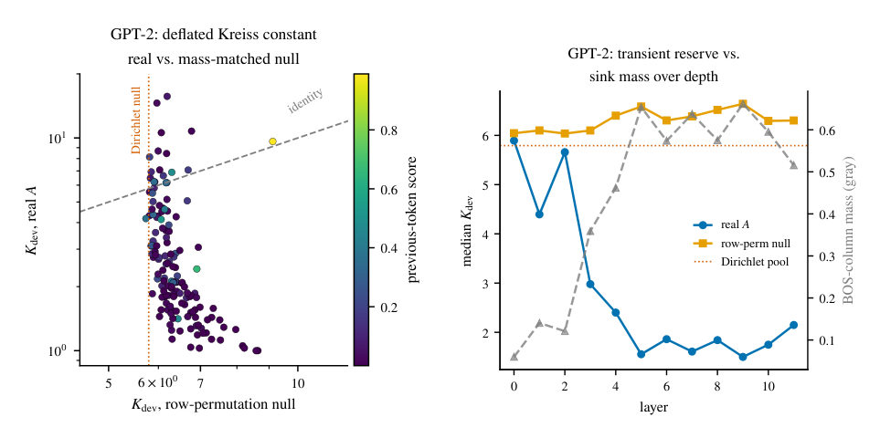
<figcaption class="paper-figure-caption"><b>Fig 1.</b> Figure 1: Left: per-head median Kdev, real versus row-permutation null (GPT-2, log–log axes). The nulls concentrate in a narrow band near 6 while real heads spread across [1, 15.7]; previous-token- like heads (bright) lie on or above the diagonal, and sink-dominated heads collapse to the analytic normal floor Kdev = 1. Right: the damper over depth. The median real Kdev tracks the null in layers 0–2 and then collapses to between 1.5 and 2 exactly as the BOS sink mass (gray) rises; sinks purchase depth stability by suppressing transient reserve.</figcaption>
</figure>
<figure class="paper-figure-card">
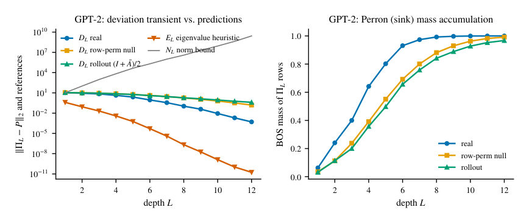
<figcaption class="paper-figure-caption"><b>Fig 2.</b> Figure 2: Depth deviation-transient for GPT-2. Left: the measured DL (blue) against the eigenvalue heuristic EL (red, which collapses to 10−11) and the norm bound (gray, which grows to 109); the measured curve lies many orders away from both. The row-permutation null (orange) decays more slowly in absolute terms, yet its eigenvalue heuristic is nearly calibrated. Right: accumulation of Perron (sink) mass. The real stack absorbs to BOS by roughly layer 8, far earlier than the null, so Perron absorption is accelerated by training.</figcaption>
</figure>
<figure class="paper-figure-card">
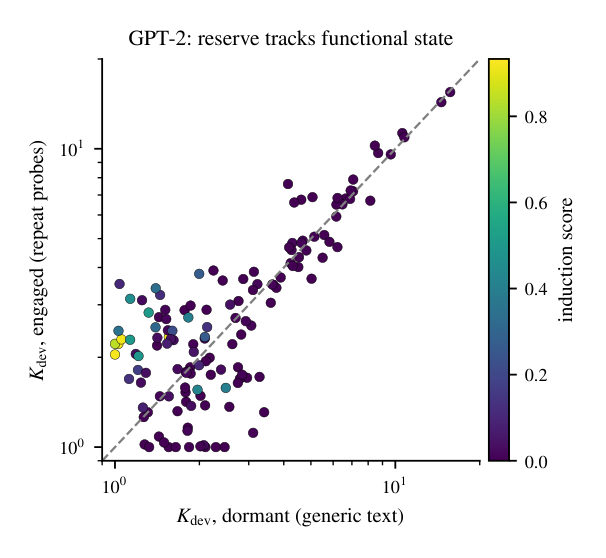
<figcaption class="paper-figure-caption"><b>Fig 3.</b> Figure 3: Transient reserve tracks functional state (GPT-2). Induction heads (bright) leave the dormant sink corner near Kdev = 1 and land above the identity when engaged, at Kdev between 2.0 and 2.8. Persistent routing heads sit on the diagonal. The shift is an excess gain over state-matched nulls and therefore reflects added routing structure rather than a changed row profile.</figcaption>
</figure>
<figure class="paper-figure-card">
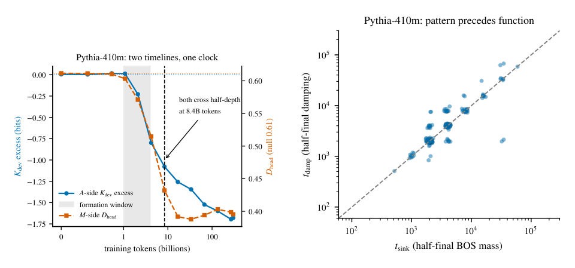
<figcaption class="paper-figure-caption"><b>Fig 4.</b> Figure 4: Training-time consolidation on Pythia-410m. Left: the population median Kdev excess (propagator side, blue) and the companion paper’s weight-space Dhead suppression (red) on a shared token axis. Both sit at their nulls through 1.1B tokens, begin to decline in the tail of the circuit- formation window (shaded), and cross half of their final depth at the same checkpoint, 8.4B tokens. The propagator side keeps deepening to 300B, while the weight-side all-head median saturates by roughly 34B; the latter is a mixture statistic, and the companion reports its induction subgroup deepening well past that point. Right: per-head timing. The sink attention pattern forms before or together...</figcaption>
</figure>
<figure class="paper-figure-card">
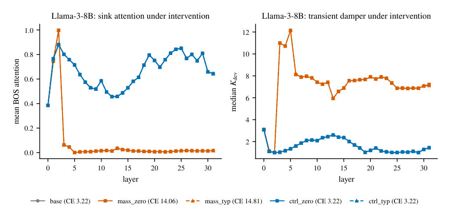
<figcaption class="paper-figure-caption"><b>Fig 5.</b> Figure 5: The causal test on Llama-3-8B. The three massive dimensions are clamped at every residual boundary (red) against three random dimensions (blue). BOS attention collapses from layer 3 onward (0.675 to 0.049, left) and the Kreiss damper releases, with Kdev jumping to 11– 12 at layers 3–5 and settling near 7.4, approximately the mask-null level (right). Controls are indistinguishable from baseline to three decimals.</figcaption>
</figure>
</div>

<p><strong>Summary.</strong> This paper argues that standard eigenvalue methods fail to capture the true, finite-depth dynamics of attention mechanisms in large language models because these operators are non-normal. By employing advanced resolvent techniques, the authors demonstrate that transient behavior is governed by quantities like pseudospectra and Kreiss constants, revealing distinct functional roles for different parts of the network.</p>
<p><strong>Why it may be interesting.</strong> The mathematical tools developed—using pseudospectra and Kreiss constants to analyze non-normal operators in a deep product structure—are directly applicable to understanding the stability and information flow dynamics in complex quantum systems or open quantum channels where simple spectral analysis fails.</p>
<details>
<summary>Detailed structure</summary>
<p><strong>Main problem.</strong> The study challenges whether eigenvalue analysis is sufficient or misleading for understanding the finite-depth dynamics of attention propagators in causal transformers, especially since these operators are non-normal.</p>
<p><strong>Main result.</strong> Resolvent quantities (like pseudospectra and Kreiss constants) are necessary to predict depth-transient behavior, as eigenvalue predictions fail by many orders of magnitude on trained stacks. The analysis reveals distinct functional roles for different attention heads acting as transient dampers or amplifiers.</p>
<p><strong>Method.</strong> The authors compare spectral properties derived from eigenvalues against resolvent quantities (pseudospectra, Kreiss constants) applied to the deflated attention operator product over depth.</p>
<p><strong>Model / system.</strong> The system analyzed is the causal attention matrix of large language models (GPT-2, Pythia, Llama), which forms a row-stochastic, non-normal operator whose dynamics are governed by repeated multiplication across model depth.</p>
<p><strong>Key observables.</strong> Kreiss constant ($K_{dev}$), pseudospectral radius ($
ho_\epsilon$), transient reserve correlations, and the deviation of actual depth evolution from eigenvalue heuristics.</p>
<p><strong>Important parameters / regimes.</strong> Model scale (e.g., Llama-3-8B), sequence length/depth ($L$), and the structural components like 'routing minority' vs. 'sink majority'.</p>
<p><strong>Assumptions / limitations.</strong> The analysis is structured around pre-registered criteria assuming eigenvalue reasoning fails for finite depth, and all quantitative results are reported as excess over per-matrix nulls.</p>
<p><strong>Figures summary.</strong> Figures illustrate the failure of eigenvalue heuristics compared to measured deviation transients (orders of magnitude difference) and show how specific heads transition between sink/damper states based on context or probes.</p>
<p><strong>Paper structure.</strong> The paper establishes the non-normality of the attention propagator, contrasts spectral vs. resolvent views, analyzes structural components (minority/majority), demonstrates quantitative failure of eigenvalues, and concludes that resolvent features are essential for predicting depth persistence.</p>
</details>
<details>
<summary>Abstract</summary>
<p>The attention matrix of a causal transformer is row-stochastic, iterated over depth, and non-normal by construction. For non-normal operators, eigenvalues control only asymptotic behavior; finite-depth behavior is controlled by resolvent quantities such as pseudospectra and Kreiss constants. We test, under pre-registered criteria, whether this resolvent view predicts anything about trained transformers that eigenvalues miss. Two structural facts organize the analysis: the mask pins the Kreiss constant of every causal stochastic matrix at $\sqrt{n}$, and deflating the mask-forced Perron projector factorizes the depth deviation dynamics exactly into a product of deflated operators. Across GPT-2, Pythia-410m, and Llama-3-8B, learned non-normality proves to be signed. A routing minority carries excess transient reserve that tracks previous-token function and doubles when induction heads engage, while the sink majority is suppressed below matched shuffle nulls, so that attention sinks act as transient dampers. On depth products, eigenvalue predictions of surviving deviations err by seven to eleven orders of magnitude, an error absent in matched nulls. Checkpoint censuses date this organization to a consolidation phase after circuit formation, and a clamping intervention on Llama-3-8B establishes a causal chain from three massive activation dimensions through sink attention to transient damping; LayerNorm models implement the same functions elsewhere. A cross-validated contest concludes that resolvent features are required for depth-transient persistence and routing-head identity, and that no single-operator summary of any kind predicts per-head causal criticality.</p>
</details>
<p><sub><a href="#top">↑ back to top</a></sub></p>

<p><a id="paper-2607.09592"></a></p>
<h3 id="a-semiclassical-gaussian-wavepacket-method-for-non-adiabatic-molecular-dynamics"><a href="http://arxiv.org/abs/2607.09592v1">A Semiclassical Gaussian Wavepacket Method for Non-Adiabatic Molecular Dynamics</a></h3>
<p><strong>Authors:</strong> Lorenzo Bocchi, Jia-Xi Zeng, Michele Ceotto<br>
<strong>Type:</strong> theory · <strong>Category:</strong> other · <strong>PDF:</strong> <a href="https://arxiv.org/pdf/2607.09592v1">https://arxiv.org/pdf/2607.09592v1</a><br>
<strong>Analysis basis:</strong> full PDF text, analyzed in chunks
<strong>Topic relevance:</strong> <code>Keldysh / 2PI / non-Gaussian methods</code> <strong>3/5</strong> · <code>methods for driven-dissipative</code> <strong>1/5</strong> · <code>non-equilibrium dynamics</code> <strong>1/5</strong></p>
<div class="figure-strip-hint">↔ Scroll figures horizontally</div>
<div class="paper-figures-scroll">
<figure class="paper-figure-card">
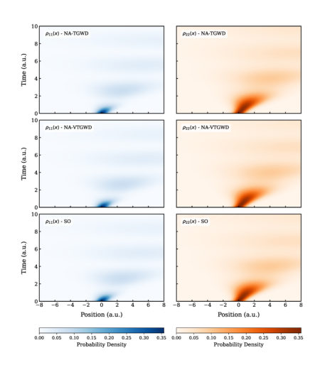
<figcaption class="paper-figure-caption"><b>Fig 1.</b> Figure 1. Wavepacket heatmaps for the probability time- evolution for the Rabi system of Eq. (22). Left for the upper V11 electronic state. Right for the lower V22 one. Bottom panel is the exact quantum evolution, middle one is NA- VTGWD, while upper panel is for NA-TGWD approxima- tion.</figcaption>
</figure>
<figure class="paper-figure-card">
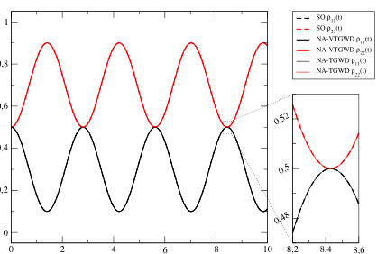
<figcaption class="paper-figure-caption"><b>Fig 2.</b> Figure 2. Wavepacket populations. Dashed lines are for the exact split-operator wavepacket propagation. Thick solid lines are for NA-VTGWD method, while thin solid lines for NA-TGWD approximation. Inset shows the accuracy of the methods.</figcaption>
</figure>
<figure class="paper-figure-card">
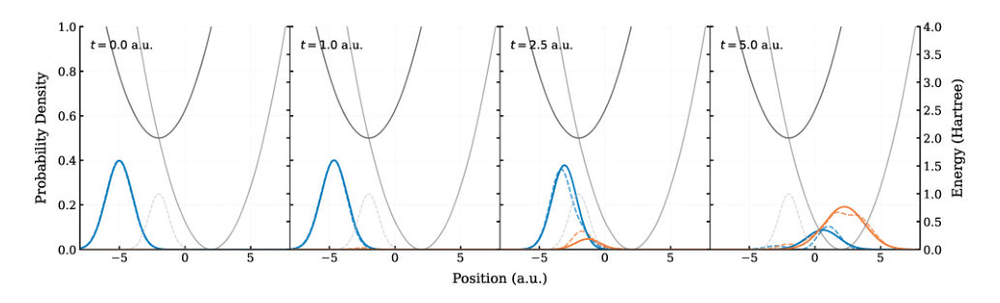
<figcaption class="paper-figure-caption"><b>Fig 3.</b> Figure 3. Diabatic wavepackets time-evolution. Gray for the potential terms, blue for the upper V11 state wavepacket and orange for the lower V22 state one. Colored solid lines for NA-VTGWD, and colored dashed lines for the exact split-operator quantum time evolution.</figcaption>
</figure>
<figure class="paper-figure-card">
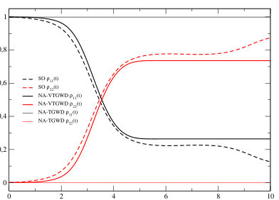
<figcaption class="paper-figure-caption"><b>Fig 4.</b> Figure 5. Wavepacket populations. Dashed lines are for the exact split-operator wavepacket propagation. Thick solid lines are for NA-VTGWD method, while thin solid lines for NA-TGWD approximation.</figcaption>
</figure>
<figure class="paper-figure-card">
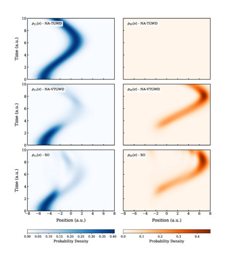
<figcaption class="paper-figure-caption"><b>Fig 5.</b> Figure 4. Wavepacket heatmaps. Left for the upper V11 elec- tronic state. Right for the lower V22 one. Bottom panel is the exact quantum evolution, middle one is NA-VTGWD, while upper panel is for NA-TGWD approximation.</figcaption>
</figure>
</div>

<p><strong>Summary.</strong> This paper introduces advanced semiclassical Gaussian wavepacket methods to simulate complex non-adiabatic molecular dynamics. The authors propose an improved variational approach (NA-VTGWD) which correctly models electronic state transitions by coupling classical trajectories on diabatic surfaces. This method proves superior to standard approximations, accurately reproducing quantum effects in systems like electron transfer and photo-dissociation.</p>
<p><strong>Why it may be interesting.</strong> This work directly addresses non-adiabatic dynamics—a cornerstone of molecular physics and quantum chemistry—by providing a computationally tractable semiclassical framework that rigorously conserves fundamental quantities.</p>
<details>
<summary>Detailed structure</summary>
<p><strong>Main problem.</strong> The primary challenge is accurately simulating non-adiabatic molecular dynamics, which requires methods beyond the Born-Oppenheimer approximation.</p>
<p><strong>Main result.</strong> The proposed Variational Thawed Gaussian method (NA-VTGWD) successfully reproduces quantum mechanical results for various non-adiabatic processes while maintaining crucial physical symmetries like energy and norm conservation.</p>
<p><strong>Method.</strong> The authors develop two semiclassical methods based on the thawed Gaussian ansatz: a standard formulation (NA-TGWD) and an improved variational version (NA-VTGWD) derived from time-dependent variational principles.</p>
<p><strong>Model / system.</strong> The models involve coupled electronic states described by diabatic potential energy surfaces ($V_{11}, V_{22}$) with coupling terms ($V_{12}$). Tests include electron transfer using coupled harmonic oscillators and photo-dissociation modeled with a Morse potential.</p>
<p><strong>Key observables.</strong> Diabatic state populations ($
ho_{ii}(t)$), wavepacket density heatmaps, and conservation of total energy and norm.</p>
<p><strong>Important parameters / regimes.</strong> The coupling strength ($V_{12}$), the nature of the potentials (harmonic vs. Morse), and the time evolution parameters for the Gaussian wavepackets.</p>
<p><strong>Assumptions / limitations.</strong> Both methods rely on the thawed Gaussian ansatz, which is exact only for specific potential forms; the variational approach is superior because it guarantees adherence to the Schrödinger equation solution.</p>
<p><strong>Figures summary.</strong> Figures compare population dynamics and wavepacket heatmaps across three approaches: exact quantum evolution (split-operator), NA-VTGWD, and the less accurate NA-TGWD for both coupled oscillators and Morse potential systems.</p>
<p><strong>Paper structure.</strong> The paper introduces the general problem, details the two semiclassical methods (NA-TGWD in one section, NA-VTGWD in another), validates them using Rabi oscillations, and applies them to complex physical scenarios like electron transfer and photo-dissociation.</p>
</details>
<details>
<summary>Abstract</summary>
<p>We introduce two non-adiabatic semiclassical methods that employ two coupled Gaussian wavepackets, each one traveling on a separate diabatic potential energy surface. The wavepackets take the form of thawed Gaussians and are driven by classical equations of motion which account for the diabatic coupling. The classical equations of motion are derived in one case by enforcing the thawed Gaussian ansatz, while in the other the time-dependent variational principles to the thawed Gaussian ansatz. After a sanity check where both approximations reproduce Rabi oscillations, the methods are applied to two non-adiabatic potential energy scenarios. The first one involves two coupled displaced harmonic oscillators, as in a typical electron transfer reaction. The second one comprises a Morse potential coupled to an upper dissociative state, modeling a photo-dissociation process. In both scenarios, the variational thawed Gaussian approach is quite accurate, while the standard thawed Gaussian one fails to fully capture the non-adiabatic effects. Ultimately, non-adiabatic molecular dynamics is reproduced by means of two classical trajectories without introducing any artificial jump or other ad-hoc non-classical effects.</p>
</details>
<p><sub><a href="#top">↑ back to top</a></sub></p>

<p><a id="paper-2607.09465"></a></p>
<h3 id="strongly-correlated-quantum-matter-t-j-model-real-space-pairing-spin-dependent-masses-and-atomicity-in-chemical-bond-and-nanosystems"><a href="http://arxiv.org/abs/2607.09465v1">Strongly correlated quantum matter: t--J model, real-space pairing, spin-dependent masses, and atomicity in chemical bond and nanosystems</a></h3>
<p><strong>Authors:</strong> Józef Spałek<br>
<strong>Type:</strong> theory · <strong>Category:</strong> strongly correlated electrons · <strong>PDF:</strong> <a href="https://arxiv.org/pdf/2607.09465v1">https://arxiv.org/pdf/2607.09465v1</a><br>
<strong>Analysis basis:</strong> full PDF text, analyzed in chunks
<strong>Topic relevance:</strong> <code>analog quantum simulation</code> <strong>3/5</strong> · <code>Keldysh / 2PI / non-Gaussian methods</code> <strong>1/5</strong> · <code>Kondo &amp; dissipative impurity</code> <strong>1/5</strong></p>
<div class="figure-strip-hint">↔ Scroll figures horizontally</div>
<div class="paper-figures-scroll">
<figure class="paper-figure-card">
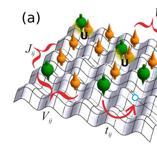
<figcaption class="paper-figure-caption"><b>Fig 1.</b> Fig. 1. Left: Visualization of a quantum Fermi liquid as an effective lattice gas of spin- 1</figcaption>
</figure>
<figure class="paper-figure-card">
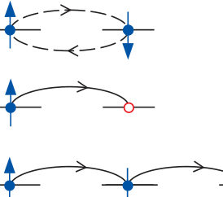
<figcaption class="paper-figure-caption"><b>Fig 2.</b> Fig. 2. Various neighboring hopping processes: a virtual hopping, b-real hopping, and c-three-site hopping in the second order. In the limit of Mott insulator only the first term (a) survives and leads to the pure kinetic-exchange interaction form.</figcaption>
</figure>
<figure class="paper-figure-card">
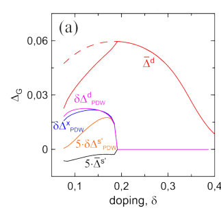
<figcaption class="paper-figure-caption"><b>Fig 3.</b> Fig. 3. The phase diagram comprising charge-density-wave (CDW) states: (a) theory [35]; (b) experiment [36]. The onset of the pair density wave (PDW) has the largest impact on the left part of the diagram (a) and induces a small s-wave pairing component in the dominant d-wave SC state, which survives as a pure state at and above the optimal doping. For details see [35, 36].</figcaption>
</figure>
<figure class="paper-figure-card">
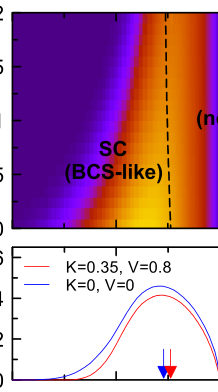
<figcaption class="paper-figure-caption"><b>Fig 4.</b> Fig. 4. Phase diagram for the full t–J–U–V model comprising both hole (δ &lt; 0) and electron (δ &gt; 0) regimes of narrow-band filling. Both non– and BCS–like regimes are marked in each regime. The lower part illustrates the influence of intersite Coulomb (K) and correlated hopping (V) parts onto the superconducting dome shapes. The arrow marks correspond to the optimal doping points (after [31]).</figcaption>
</figure>
<figure class="paper-figure-card">
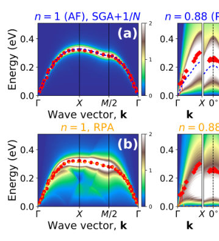
<figcaption class="paper-figure-caption"><b>Fig 5.</b> Fig. 6. (a)-(e) Spectra for the collective magnetic excitations comprising re- spectively: The magnon dispersion relation for the Mott insulator (a), param- agnon (c) and antiferromagnetic (AF) (e) spectra for strongly correlated metal for δ = 1 −n = 0.12, calculated within SGA + 1/N approach; paramagnetic (b) and AF (d) spectra calculated within the RPA, analytic approximation for the spectra for n = 1 and n = 0.88 are provided in (f) and (g). For detail analysis see Refs. [39–41]</figcaption>
</figure>
</div>

<p><strong>Summary.</strong> This paper provides a critical overview of strongly correlated fermion systems, centering on the $t$-$J$ model derived from the Hubbard Hamiltonian. It details advanced theoretical techniques like canonical perturbation expansion to derive effective Hamiltonians governing high-temperature superconductivity and heavy fermion behavior. Furthermore, it extends its scope by introducing 'atomicity' as a necessary correction for describing chemical bonding in molecules.</p>
<p><strong>Why it may be interesting.</strong> The paper bridges solid-state physics (Hubbard/t-J models for high-$T_c$) with molecular physics ($    ext{H}_2$ bonding), providing a unified theoretical framework that addresses how correlation effects manifest differently in extended solids versus simple molecules. The concept of 'atomicity' is a novel diagnostic tool.</p>
<details>
<summary>Detailed structure</summary>
<p><strong>Main problem.</strong> The central problem is developing a comprehensive theory for strongly correlated fermion systems, particularly addressing high-temperature superconductivity and understanding the nature of chemical bonding in nanosystems.</p>
<p><strong>Main result.</strong> The paper establishes the $t$-$J$ model as a fundamental framework by deriving an effective Hamiltonian through canonical perturbation expansion, while also introducing 'atomicity' to correct physical descriptions of molecular bonding.</p>
<p><strong>Method.</strong> The methodology combines theoretical derivations using projection operators ($P_1, P_2$) on the Hubbard model, canonical perturbation theory, and analytical solutions for molecular Hamiltonians (Heitler-London type).</p>
<p><strong>Model / system.</strong> The primary models are the Hubbard/t-J model for solid-state physics (cuprates, heavy fermions) and the extended Heitler-London model for diatomic molecules like H2. The analysis spans from lattice dynamics to molecular bonding.</p>
<p><strong>Key observables.</strong> Superconducting pairing correlations ($\langle \hat{b}^\dagger_{ij} 
angle$), spin-dependent effective masses, Mott transition behavior, Covalency, Ionicity, and Atomicity in chemical bonds.</p>
<p><strong>Important parameters / regimes.</strong> $U$ (Coulomb repulsion), $t_{ij}$ (hopping amplitude), bandwidth ($W$), interatomic distance ($R/a_0$).</p>
<p><strong>Assumptions / limitations.</strong> The derivation relies on the strong correlation limit ($|t_{ij}| \ll U-K$) and the use of orthogonal projection operators to decompose the Fock space.</p>
<p><strong>Figures summary.</strong> Figure 1 illustrates the Brillouin zone for a quantum Fermi liquid. Figure 18 shows electron density profiles for H2 at various interatomic distances, demonstrating the separation into atomic states as distance increases.</p>
<p><strong>Paper structure.</strong> The structure moves from reviewing the historical development of strong correlation theory (Mott to t-J model) via Hamiltonian decomposition and perturbation expansion, to applying these concepts to specific physical regimes like superconductivity, and finally extending the formalism to analyze chemical bonding using the concept of atomicity.</p>
</details>
<details>
<summary>Abstract</summary>
<p>I critically overview my research on strongly correlated fermion systems for almost five decades. It concentrated on: (i) the first derivation of what is now called the t--J model, comprising both the limit of Anderson kinetic exchange of spin--spin interaction in the Mott--Hubbard insulator and taking into account real-space pairing, subsequently applied to high-temperature superconductivity; (ii) the concept of spin-dependent heavy mass of quasiparticles in heavy-fermion systems, and (iii) the first nontrivial model of statistical thermodynamics of the Mott--Hubbard transition. Those three features, together with the specific quantum critical phenomena provide, in my view, fundamental components of the theory of strongly correlated fermions established in the 1960s. Some related questions such as introduction of atomicity in the chemical bonding (iv), and specific properties of correlated nanosystems within the rigorous EDABI (v) approach are also briefly elaborated at the end.</p>
</details>
<p><sub><a href="#top">↑ back to top</a></sub></p>

<p><a id="paper-2607.09632"></a></p>
<h3 id="lean-qit-towards-a-formal-infrastructure-for-quantum-information-theory"><a href="http://arxiv.org/abs/2607.09632v1">Lean-QIT: Towards a Formal Infrastructure for Quantum Information Theory</a></h3>
<p><strong>Authors:</strong> Chengkai Zhu, Ziao Tang, Guocheng Zhen, Yimeng Cao, Yusheng Zhao, Ranyiliu Chen, Xuanqiang Zhao, Lei Zhang, Xin Wang<br>
<strong>Type:</strong> theory · <strong>Category:</strong> quantum information and computing · <strong>PDF:</strong> <a href="https://arxiv.org/pdf/2607.09632v1">https://arxiv.org/pdf/2607.09632v1</a><br>
<strong>Analysis basis:</strong> full PDF text, analyzed in chunks
<strong>Topic relevance:</strong> <code>entanglement &amp; information structure</code> <strong>3/5</strong> · <code>quantum measurements</code> <strong>1/5</strong></p>
<div class="figure-strip-hint">↔ Scroll figures horizontally</div>
<div class="paper-figures-scroll">
<figure class="paper-figure-card">
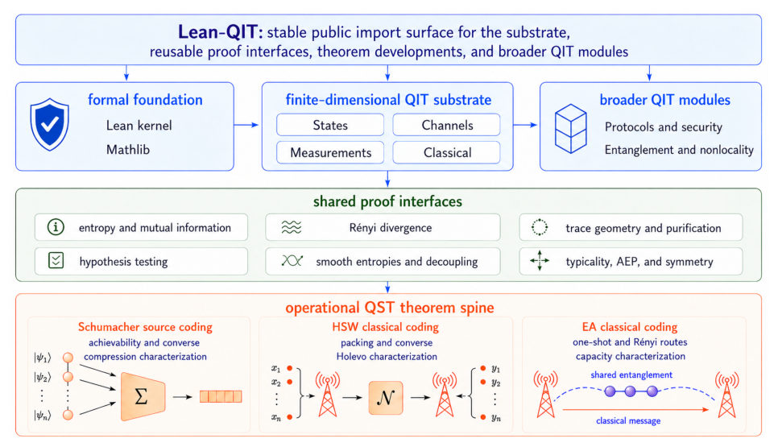
<figcaption class="paper-figure-caption"><b>Fig 1.</b> Figure 1: Global architecture of Lean-QIT. The libaray is built on the trusted Lean/Mathlib foundation, finite-dimensional QIT substrate, shared proof interfaces, operational QST coding surfaces, and broader QIT modules. The QST spine consumes the shared interfaces to state and prove Schumacher source coding, HSW classical communication, and entanglement-assisted classical communication endpoints.</figcaption>
</figure>
<figure class="paper-figure-card">
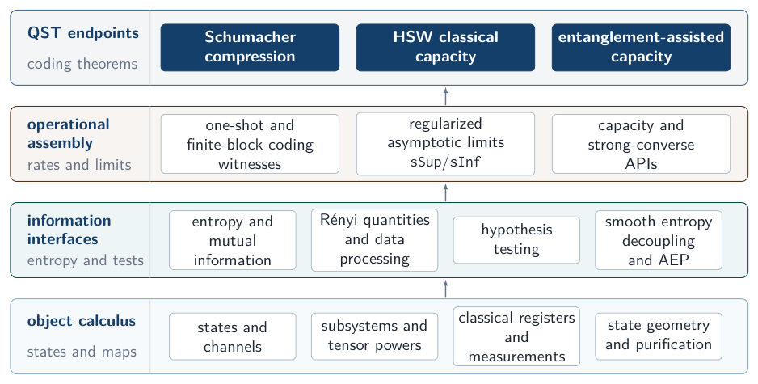
<figcaption class="paper-figure-caption"><b>Fig 2.</b> Figure 2: Layered proof stack for the reusable finite-dimensional QIT building blocks in Lean-QIT. The object calculus supplies typed states, channels, subsystem operations, classical interfaces, and state geometry. Information-theoretic interfaces expose entropy, divergence, testing, and smoothing principles to operational rate constructions. These layers are then assembled into the Schumacher, HSW, and entanglement-assisted coding endpoints developed in Section 4.</figcaption>
</figure>
<figure class="paper-figure-card">

<figcaption class="paper-figure-caption"><b>Fig 3.</b> Figure 3: Architecture of the coding spine developed in Section 4. Three independent theorem lanes consume the reusable finite-dimensional QIT interfaces of Section 3. Within each lane, an operational API branches into direct and converse obligations and reassembles at a proved asymptotic endpoint.</figcaption>
</figure>
</div>

<p><strong>Summary.</strong> This paper introduces Lean-QIT, a novel library built in the proof assistant Lean 4, designed to provide a machine-checkable foundation for Quantum Information Theory. It achieves this by creating reusable interfaces that formally connect operational coding protocols with deep analytic theorems like the classical capacity bounds. This infrastructure aims to enable automated reasoning and formal verification across quantum information science.</p>
<p><strong>Why it may be interesting.</strong> While focused on abstract theory, the rigorous formalization of capacity theorems provides a foundational mathematical toolset that could be adapted to analyze resource constraints or information flow in complex quantum simulations.</p>
<details>
<summary>Detailed structure</summary>
<p><strong>Main problem.</strong> The core problem is formalizing Quantum Information Theory (QIT) by unifying finite-block protocols, analytic inequalities, and asymptotic limits into a single, machine-checkable framework.</p>
<p><strong>Main result.</strong> The authors successfully formalized major QST theorems—including Schumacher's source coding theorem and the HSW capacity theorem—within a reusable library structure that separates operational definitions from analytical characterizations.</p>
<p><strong>Method.</strong> They developed Lean-QIT, a library in the proof assistant Lean 4. This method involves building composable, kernel-checked interfaces for quantum states, channels, and information measures to ensure mathematical rigor.</p>
<p><strong>Model / system.</strong> The framework models finite-dimensional quantum systems using typed structures for quantum states ($
ho$) and completely positive trace-preserving (CPTP) channels ($\Phi$). It handles subsystems, measurements (POVMs), and classical registers abstractly.</p>
<p><strong>Key observables.</strong> Achievable rates, capacities (e.g., Holevo–Schumacher–Westmoreland capacity), error criteria, von Neumann entropy, and quantum relative entropy.</p>
<p><strong>Important parameters / regimes.</strong> Error tolerance ($\epsilon$), blocklength ($n$), and the Rényi parameter ($\alpha$).</p>
<p><strong>Assumptions / limitations.</strong> The work assumes that complex QIT theorems can be decomposed into named, reusable components (e.g., direct/converse bounds) to build a compositional knowledge substrate.</p>
<p><strong>Figures summary.</strong> Figure 1 illustrates the global architecture of Lean-QIT as a stack built on Mathlib, showing distinct layers for object calculus, information interfaces, and operational coding surfaces. Figure 2 details the layered proof structure from basic objects up to rate constructions.</p>
<p><strong>Paper structure.</strong> The paper is structured around building an infrastructure: first defining typed quantum objects (states/channels), then implementing core information measures (entropy, testing), and finally assembling these components to prove major theorems by bridging finite-block results to asymptotic limits via 'squeezes'.</p>
</details>
<details>
<summary>Abstract</summary>
<p>Quantum information theory (QIT) characterizes the capabilities and fundamental limits of quantum information processing, underpinning quantum communication, computation, and error correction. Formalizing its coding theorems requires connecting finite-block protocols, analytic inequalities, and asymptotic limits within a unified machine-checked framework. Existing developments, however, lack a reusable operational layer that defines codes, error criteria, achievable rates, and capacities independently of their information-theoretic characterizations. In this work, we present LeanQIT, a Lean 4 library for finite-dimensional QIT. It provides composable, kernel-checked interfaces for quantum states and channels, source and channel codes, finite-block performance criteria, hypothesis testing, one-shot quantities, and asymptotic rate constructions. Using this infrastructure, we formalize Schumacher's quantum source-coding theorem, the Holevo--Schumacher--Westmoreland classical-capacity theorem, and the entanglement-assisted classical-capacity theorem together with its strong converse. By separating operational definitions from analytic characterizations and exposing reusable achievability, converse, and asymptotic components, Lean-QIT provides a machine-readable foundation for formal QIT and a compositional knowledge substrate for emerging AI-assisted formalization, automated proof search, and agentic reasoning in quantum information and computation.</p>
</details>
<p><sub><a href="#top">↑ back to top</a></sub></p>

<p><a id="paper-2607.09339"></a></p>
<h3 id="pcpopjl-a-julia-package-for-partially-commutative-polynomial-optimization"><a href="http://arxiv.org/abs/2607.09339v1">PCPOP.jl: A Julia package for partially commutative polynomial optimization</a></h3>
<p><strong>Authors:</strong> Moisés Bermejo Morán, Abhishek Mishra<br>
<strong>Type:</strong> theory · <strong>Category:</strong> quantum information and computing · <strong>PDF:</strong> <a href="https://arxiv.org/pdf/2607.09339v1">https://arxiv.org/pdf/2607.09339v1</a><br>
<strong>Analysis basis:</strong> full PDF text, analyzed in chunks
<strong>Topic relevance:</strong> <code>entanglement &amp; information structure</code> <strong>3/5</strong> · <code>Keldysh / 2PI / non-Gaussian methods</code> <strong>1/5</strong></p>
<div class="figure-strip-hint">↔ Scroll figures horizontally</div>
<div class="paper-figures-scroll">
<figure class="paper-figure-card">

<figcaption class="paper-figure-caption"><b>Fig 1.</b> Figure 1: Benchmarking building time of the partially commutative monoid in PCPOP (black) and the Gr¨obner basis in OSCAR (blue) truncated to degree d for the scenarios with n parties in Example (3).</figcaption>
</figure>
<figure class="paper-figure-card">

<figcaption class="paper-figure-caption"><b>Fig 2.</b> Figure 2: Benchmarking computing canonical forms with respect to the commutation relations in Example 3 in PCPOP (black), OSCAR (blue) and QuantumNPA (red). The figure shows the time in nanoseconds of computing the canonical form of wv for random words w and v of length d in 3n = 6 variables (a,b,c).</figcaption>
</figure>
<figure class="paper-figure-card">

<figcaption class="paper-figure-caption"><b>Fig 3.</b> Figure 3: Benchmarking computing canonical forms with respect to the commuta- tion relations and projection constraints in Example 3 in PCPOP (black), OSCAR (blue) andQuantumNPA (red). The figure shows the time in nanoseconds of computing the canon- ical form of wv for random words w and v of length d in 3n = 6 variables (a,b,c).</figcaption>
</figure>
</div>

<p><strong>Summary.</strong> This paper presents PCPOP.jl, a specialized Julia package designed to solve complex polynomial optimization problems in non-commutative settings relevant to quantum physics. It utilizes moment relaxation formulated as Semidefinite Programs (SDPs) and incorporates advanced algebraic tools for partially commutative variables. This provides a powerful computational tool for analyzing bounds on quantum correlations and information measures.</p>
<p><strong>Why it may be interesting.</strong> This work provides essential mathematical machinery for tackling hard optimization problems arising from quantum correlations and entanglement measures, which are central to modern quantum information theory.</p>
<details>
<summary>Detailed structure</summary>
<p><strong>Main problem.</strong> The core problem is polynomial optimization, extended to non-commutative settings like partially commutative variables, tracial, and state polynomial optimization.</p>
<p><strong>Main result.</strong> The paper introduces PCPOP.jl, a Julia package that automates the construction of Semidefinite Programming (SDP) relaxations to approximate the true optimum value of these complex quantum optimization problems.</p>
<p><strong>Method.</strong> It employs moment relaxation techniques, which formulate the problem as an SDP solvable via specialized algebraic reductions like Gröbner basis methods and canonical clique representations for partially commutative variables.</p>
<p><strong>Model / system.</strong> The framework is designed for modeling physical constraints arising in quantum information theory, such as those related to Bell inequalities or general non-commutative polynomial constraints.</p>
<p><strong>Key observables.</strong> The optimal value $p^*$ of the polynomial optimization problem, and diagnostic metrics like SDP size, number of variables, and solving time during benchmarking.</p>
<p><strong>Important parameters / regimes.</strong> The degree bound ($d$) used in moment relaxations, which dictates the complexity and convergence rate; boundedness assumptions are crucial for convergence.</p>
<p><strong>Assumptions / limitations.</strong> Convergence of the moment relaxation sequence $p^*_d$ to the true optimum $p^*$ requires assuming that the feasible set is bounded. Furthermore, specific conditions like 'flatness' are needed for trace polynomial optimization.</p>
<p><strong>Figures summary.</strong> The notes summarize benchmarking results across four tables comparing PCPOP against other packages (Ncpol2sdpa, QuantumNPA, Moment) based on setup time and solving time for various quantum contextuality problems.</p>
<p><strong>Paper structure.</strong> The paper introduces the general polynomial optimization framework, details the extensions to non-commutative/quantum settings, describes the computational tools within PCPOP.jl (including clique representation), and concludes with a performance comparison against existing state-of-the-art solvers.</p>
</details>
<details>
<summary>Abstract</summary>
<p>Here we present PCPOP, a Julia package for polynomial optimization that supports non-commutative optimization, tracial polynomial optimization, trace polynomial optimization and state polynomial optimization. PCPOP fully supports exact arithmetic computations and incorporates convenient functionalities such as algebraic reductions based on Gröbner basis methods, automatized symmetrization via Wedderburn decompositions, and Jordan algebra reductions. As a distinguished feature, PCPOP implements a specialized framework for polynomial computations in partially commutative variables that provides significant computational advantages for problems appearing in quantum information.</p>
</details>
<p><sub><a href="#top">↑ back to top</a></sub></p>

<p><a id="paper-2607.09198"></a></p>
<h3 id="quantum-scattering-model-of-dual-parallel-mach-zehnder-electro-optic-modulators-general-formalism-impairments-and-applications-to-frequency-bin-photonic-quantum-states"><a href="http://arxiv.org/abs/2607.09198v1">Quantum Scattering Model of Dual Parallel Mach Zehnder Electro Optic Modulators: General Formalism, Impairments, and Applications to Frequency-Bin Photonic Quantum States</a></h3>
<p><strong>Authors:</strong> Mar Yuste, Carlos R. Fernández Pousa, Javier Fraile Peláez, José Capmany<br>
<strong>Type:</strong> theory · <strong>Category:</strong> quantum information and computing · <strong>PDF:</strong> <a href="https://arxiv.org/pdf/2607.09198v1">https://arxiv.org/pdf/2607.09198v1</a><br>
<strong>Analysis basis:</strong> full PDF text, analyzed in chunks
<strong>Topic relevance:</strong> <code>interference shaping light</code> <strong>3/5</strong> · <code>methods for driven-dissipative</code> <strong>1/5</strong></p>
<div class="figure-strip-hint">↔ Scroll figures horizontally</div>
<div class="paper-figures-scroll">
<figure class="paper-figure-card">

<figcaption class="paper-figure-caption"><b>Fig 1.</b> Fig. 1. Layout of the DP-MZM device, showing the input/output external beamsplitters, the in- phase and quadrature internal MZIs with their branch phase modulators, and the quadrature bias phase shifter, together with the unitary operators representing each component.</figcaption>
</figure>
<figure class="paper-figure-card">

<figcaption class="paper-figure-caption"><b>Fig 2.</b> Fig. 2. Frequency-domain representation of quantum scattering in the DP-MZM. An input carrier state at frequency ωₒ is transformed into a superposition of sidebands at ωₒ + qΩ, forming a frequency-comb structure whose amplitudes are set by the coherent interference of the in-phase (I) and quadrature (Q) branches. Single-photon and coherent-state transformations are illustrated for the two input cases treated in Sections 3 and 4.</figcaption>
</figure>
<figure class="paper-figure-card">

<figcaption class="paper-figure-caption"><b>Fig 3.</b> Figure 3 illustrates this comb structure numerically for a representative single-photon input, showing how sideband power redistributes as the modulation index increases.</figcaption>
</figure>
<figure class="paper-figure-card">

<figcaption class="paper-figure-caption"><b>Fig 4.</b> Fig. 3 (numerical illustration). Normalized single-photon sideband click probability |H(q)|² vs. sideband order q for three modulation indices, ideal push-pull operation, ϕₘ = π/2, balanced 3- dB splitters.</figcaption>
</figure>
<figure class="paper-figure-card">

<figcaption class="paper-figure-caption"><b>Fig 5.</b> Fig. 4. Side-by-side comparison of (a) the single-photon click-probability spectrum and (b) the coherent-state mean-photon-number spectrum (input amplitude α₀ = 2), for identical DP-MZM operating conditions (m = 1.2, ideal push-pull bias). The two envelopes coincide up to normalization, confirming Eq. (9).</figcaption>
</figure>
</div>

<p><strong>Summary.</strong> The paper presents a general quantum scattering model for Dual Parallel Mach-Zehnder Modulators (DP-MZMs) to analyze their effect on single photons and coherent states. It quantifies how imperfections like bias error degrade the performance of these modulators when used as frequency-bin qubit sources. The results are crucial for designing high-fidelity photonic quantum information systems.</p>
<p><strong>Why it may be interesting.</strong> This work provides a rigorous quantum description of a key photonic component used in quantum communication protocols, directly impacting the feasibility assessment for building practical quantum hardware.</p>
<details>
<summary>Detailed structure</summary>
<p><strong>Main problem.</strong> To develop a comprehensive quantum-mechanical model for Dual Parallel Mach-Zehnder Electro-Optic Modulators (DP-MZMs) to accurately describe their action on non-classical light.</p>
<p><strong>Main result.</strong> The model provides the complete, unrestricted unitary transformation for single-photon and coherent states, allowing quantification of performance degradation due to various physical impairments like bias error and I/Q imbalance.</p>
<p><strong>Method.</strong> The analysis employs the quantum scattering formalism by deriving stage-by-stage unitary operators that compose the entire device action. This is applied separately to single-photon creation operators and displacement operators for coherent states.</p>
<p><strong>Model / system.</strong> The physical system is a DP-MZM used as a frequency shifter/encoder in photonic quantum information. The model tracks the evolution of light fields through cascaded beamsplitters, phase modulators, and combiners using unitary scattering operators ($\hat{S}_{DP}$).</p>
<p><strong>Key observables.</strong> Single-photon sideband click probability $|\hat{H}(q)|^2$, two-frequency-bin qubit fidelity ($F$), and image-sideband suppression ratio ($\varepsilon_{dB}$).</p>
<p><strong>Important parameters / regimes.</strong> Modulation indices ($m_I, m_Q$), quadrature bias error ($\Delta\phi_P$), I/Q imbalance, and RF drive frequencies ($\Omega$).</p>
<p><strong>Assumptions / limitations.</strong> The model is general, accounting for non-ideal components; however, the final analysis often assumes classical RF drives (c-number parameters) or uses approximations like the BCH theorem.</p>
<p><strong>Figures summary.</strong> Figures illustrate the device layout and frequency comb structure. Numerical results show single-photon sideband probabilities under varying modulation indices and quantify qubit fidelity degradation versus bias error.</p>
<p><strong>Paper structure.</strong> The paper derives the general unitary transformation for both single-photon and coherent inputs, analyzes specific operating points (push-pull vs. quadrature), and then numerically evaluates performance metrics like fidelity using Monte Carlo simulations to assess noise sensitivity.</p>
</details>
<details>
<summary>Abstract</summary>
<p>We present a quantum mechanical model of dual parallel Mach Zehnder electro-optic modulators (DPMZMs), derived using the quantum scattering formalism [1,2]. We obtain the complete, unrestricted transformation of single-photon and coherent input states through the DPMZM architecture, including independent radiofrequency drive conditions on each internal modulator, and recover the symmetric push pull operating point as an exact special case. We numerically evaluate the resulting frequency comb structure, quantify the device sensitivity to bias error, modulation-index imbalance, and RF noise, and use the model to design a DP-MZM-based frequency-bin qubit source, reporting its fidelity as a function of these impairments.</p>
</details>
<p><sub><a href="#top">↑ back to top</a></sub></p>

<p><a id="paper-2607.09469"></a></p>
<h3 id="a-combinatorial-framework-for-clustering-graph-states-algorithms-and-hardness-for-rank-integrity"><a href="http://arxiv.org/abs/2607.09469v1">A combinatorial framework for clustering graph states: Algorithms and hardness for rank-integrity</a></h3>
<p><strong>Authors:</strong> Romain Bourneuf, Nathan Claudet, Sang Yoon Kim, Rose McCarty, Blair D. Sullivan, Stéphan Thomassé<br>
<strong>Type:</strong> theory · <strong>Category:</strong> quantum information and computing · <strong>PDF:</strong> <a href="https://arxiv.org/pdf/2607.09469v1">https://arxiv.org/pdf/2607.09469v1</a><br>
<strong>Analysis basis:</strong> full PDF text, analyzed in chunks
<strong>Topic relevance:</strong> <code>entanglement &amp; information structure</code> <strong>3/5</strong></p>
<div class="figure-strip-hint">↔ Scroll figures horizontally</div>
<div class="paper-figures-scroll">
<figure class="paper-figure-card">

<figcaption class="paper-figure-caption"><b>Fig 1.</b> Low-resolution page preview, page 2</figcaption>
</figure>
<figure class="paper-figure-card">

<figcaption class="paper-figure-caption"><b>Fig 2.</b> Low-resolution page preview, page 3</figcaption>
</figure>
<figure class="paper-figure-card">

<figcaption class="paper-figure-caption"><b>Fig 3.</b> Low-resolution page preview, page 4</figcaption>
</figure>
<figure class="paper-figure-card">

<figcaption class="paper-figure-caption"><b>Fig 4.</b> Low-resolution page preview, page 5</figcaption>
</figure>
<figure class="paper-figure-card">

<figcaption class="paper-figure-caption"><b>Fig 5.</b> Low-resolution page preview, page 6</figcaption>
</figure>
</div>

<p><strong>Summary.</strong> This paper introduces a combinatorial framework to measure the 'distance' between quantum graph states. This distance metric is shown to be equivalent to a graph property called rank integrity, which measures how much two graphs can differ while keeping the rank of their combined adjacency matrix low. The work provides both efficient algorithms and hardness results for determining this structural parameter.</p>
<p><strong>Why it may be interesting.</strong> It provides a deep mathematical link between graph structure theory (edit distances) and the resource quantification of quantum entanglement in network models, which is crucial for understanding computational limits in measurement-based quantum computation.</p>
<details>
<summary>Detailed structure</summary>
<p><strong>Main problem.</strong> The paper develops a combinatorial framework to analyze clustering graph states, which is mathematically related to quantum network edit-distance problems.</p>
<p><strong>Main result.</strong> It establishes that the ancilla integrity problem for graph states is equivalent to rank integrity, proving this latter problem is XP parameterized by $k$ but also W[1]-hard in $k$.</p>
<p><strong>Method.</strong> The authors use concepts from graph theory (vertex-minors, local complementation) and algebraic methods over GF(2) to translate quantum state distance into computable graph properties.</p>
<p><strong>Model / system.</strong> The primary model is the graph state $|	ext{G}
angle$ on qubits, which represents a quantum network resource. The analysis focuses on how these states can be related or perturbed using limited quantum operations (Clifford gates and Pauli measurements).</p>
<p><strong>Key observables.</strong> The minimum number of ancilla qubits required to prepare two graph states, the maximum component size of the resulting cluster state $G'$, and the rank of the sum of adjacency matrices over GF(2).</p>
<p><strong>Important parameters / regimes.</strong> The parameter $k$, which quantifies the allowed 'distance' or perturbation level between graph states.</p>
<p><strong>Assumptions / limitations.</strong> The distance measure is restricted to preparation using one-qubit Clifford gates, Pauli measurements, and classical communication.</p>
<p><strong>Figures summary.</strong> Figure 1 illustrates a graph $G'$ obtained from $G$ by flipping, and the resulting sum graph $G + G'$, connecting structural changes to rank properties.</p>
<p><strong>Paper structure.</strong> The paper introduces the distance metric, relates it combinatorially to vertex-minors, establishes equivalence with rank integrity, and then proves complexity results (XP vs. W[1]-hardness) for solving this parameterized problem.</p>
</details>
<details>
<summary>Abstract</summary>
<p>We introduce a new notion of distance between two graph states $|G\rangle$ and $|G'\rangle$ on the same set of qubits. This distance is the minimum number of ancilla qubits in a graph state $|\widehat{G}\rangle$ from which both $|G\rangle$ and $|G'\rangle$ can be <code>easily prepared''. (When preparing graph states, we are only allowed to use one-qubit Clifford gates, one-qubit Pauli measurements, and classical communication.) We give a graphical description of this distance through the lens of vertex-minors. We then show how this distance yields quantum network analogs of many graph edit-distance problems.   Using this framework, we develop classical algorithms for identifying the</code>highly entangled clusters'' of a graph state $|G\rangle$. The ancilla integrity problem asks, given a graph $G$ and integer $k$, for the minimum -- over all graph states $|G'\rangle$ with distance at most $k$ from $|G\rangle$ -- of the maximum component size of $G'$. Up to a factor of $2$ in the number of ancilla qubits, this problem is equivalent to rank integrity, where the distance between $G$ and $G'$ is instead the minimum rank of the sum of their adjacency matrices over $\text{GF}(2)$. We prove that rank integrity is XP parameterized by $k$. We also prove the complementary hardness result that rank integrity is W[1]-hard in $k$. Finally, we give an explicit $\mathcal{O}(n^6)$-time algorithm for ancilla integrity when $G$ has $n$ vertices and $k=1$.</p>
</details>
<p><sub><a href="#top">↑ back to top</a></sub></p>

<p><a id="paper-2607.09476"></a></p>
<h3 id="orthogonal-quantum-krylov-diagonalisation"><a href="http://arxiv.org/abs/2607.09476v1">Orthogonal Quantum Krylov Diagonalisation</a></h3>
<p><strong>Authors:</strong> Hadi Rammal, Alexandre Perrin, Oumaya Ladhari, Clément Dutreix, Jérémie Messud, Matthieu Saubanere<br>
<strong>Type:</strong> theory · <strong>Category:</strong> quantum information and computing · <strong>PDF:</strong> <a href="https://arxiv.org/pdf/2607.09476v1">https://arxiv.org/pdf/2607.09476v1</a><br>
<strong>Analysis basis:</strong> full PDF text, analyzed in chunks
<strong>Topic relevance:</strong> <code>analog quantum simulation</code> <strong>3/5</strong></p>
<div class="figure-strip-hint">↔ Scroll figures horizontally</div>
<div class="paper-figures-scroll">
<figure class="paper-figure-card">

<figcaption class="paper-figure-caption"><b>Fig 1.</b> FIG. 1. Schematic comparison between conventional QKD/CQKD and the proposed OQKD approach. In QKD/CQKD, the NT × NT Hamiltonian is projected onto a Krylov subspace of dimension D spanned by generally nonorthogonal vectors, which are additionally unnormalized in block-encoding-based implementations. Consequently, a generalized eigenvalue problem involving an ill-conditioned overlap matrix must be solved. In contrast, OQKD projects the Hamiltonian onto an orthonormal Krylov basis, elimi- nating overlap-matrix regularization and improving numer- ical stability.</figcaption>
</figure>
<figure class="paper-figure-card">

<figcaption class="paper-figure-caption"><b>Fig 2.</b> FIG. 2. Results for the J1-J2 spin model (J1 = 1, J2 = 0.5) with an initial mean-field approximated ground state, com- paring QKD, CQKD, and OQKD. The arrows indicate the first subspace dimension at which the thresholded and un- thresholded calculations begin to differ. (a) Condition num- ber of the overlap matrix S as a function of Krylov-subspace dimension. QKD becomes increasingly ill-conditioned with increasing subspace dimension, while CQKD partially mit- igates this effect through the Chebyshev thresholding tech- nique. In contrast, OQKD preserves orthogonality by con- struction, resulting in an overlap matrix that remains close to the identity up to numerical precision. The dashed...</figcaption>
</figure>
<figure class="paper-figure-card">

<figcaption class="paper-figure-caption"><b>Fig 3.</b> FIG. 3. Probability of successfully implementing the normal- ized Lanczos polynomial using GQSP as a function of the Lanczos subspace dimension D. The success probability de- creases exponentially with increasing polynomial degree due to the rapid growth of the normalization factor Λn.</figcaption>
</figure>
<figure class="paper-figure-card">

<figcaption class="paper-figure-caption"><b>Fig 4.</b> FIG. 4. Performance of the restarted OQKD state-preparation protocol. (a) Infidelity, 1 − ⟨E0|ψ(k) 0 ⟩ 2 , of the prepared state with respect to the exact ground state as a function of the restart iteration. Despite the nearly constant state-preparation probability, the infidelity decreases monotonically toward zero, demonstrating that the restarted protocol progressively improves the ground-state approximation while maintaining a favorable implementation cost. (b) Probability of successfully preparing the approximate ground state after each restart iteration from the original easily prepared initial state by implementing the accumulated GQSP polynomial of Eq. (42). The success probability...</figcaption>
</figure>
<figure class="paper-figure-card">

<figcaption class="paper-figure-caption"><b>Fig 5.</b> FIG. 5. Success probability for preparing the Krylov ba- sis vectors in the restarted OQKD (ROQKD) protocol as a function of the effective subspace dimension for different max- imum Lanczos subspace dimensions, nLanczos = 2, 4, and 6. For the restarted CQKD (RCQKD) protocol, the Krylov sub- space dimension at each restart is chosen according to the protocol described above, namely as the largest numerically stable value that avoids thresholding. Darker shades corre- spond to successive restart iterations.</figcaption>
</figure>
</div>

<p><strong>Summary.</strong> The paper introduces Orthogonal Quantum Krylov Diagonalization (OQKD), an algorithm designed to compute low-energy spectra of quantum systems by mimicking the stable Lanczos procedure. OQKD achieves this orthogonality directly on the quantum computer, bypassing the need for numerically unstable overlap matrix calculations inherent in prior methods. This establishes a robust and scalable framework for both eigensolving and state preparation protocols like Quantum Phase Estimation.</p>
<p><strong>Why it may be interesting.</strong> This work provides a significant algorithmic improvement for quantum eigensolvers by directly addressing the fundamental stability bottleneck (overlap matrix regularization) that plagues current quantum subspace methods, making it highly relevant for simulating complex Hamiltonians in AMO physics.</p>
<details>
<summary>Detailed structure</summary>
<p><strong>Main problem.</strong> The primary challenge is developing a quantum algorithm for finding low-energy spectra of many-body Hamiltonians that maintains the numerical stability and orthogonality properties of classical Lanczos methods without requiring overlap-matrix regularization.</p>
<p><strong>Main result.</strong> The Orthogonal Quantum Krylov Diagonalization (OQKD) framework successfully implements an orthogonal analog of the Lanczos algorithm, eliminating the need for overlap matrix inversion. Furthermore, a restarted protocol is proposed that maintains convergence while keeping state preparation probabilities affordable.</p>
<p><strong>Method.</strong> The authors reformulate the classical Lanczos recursion at the operator level, utilizing Generalized Quantum Signal Processing (GQSP) and block encoding to generate an orthonormal Krylov basis directly on the quantum computer.</p>
<p><strong>Model / system.</strong> The method is tested using numerical simulations of the J1–J2 Heisenberg model. The core mathematical structure involves projecting the Hamiltonian onto a reduced subspace spanned by the Krylov basis vectors.</p>
<p><strong>Key observables.</strong> Overlap matrix condition number ($\kappa(S)$), energy error convergence, and state preparation fidelity/success probability.</p>
<p><strong>Important parameters / regimes.</strong> Subspace dimension ($D$), Lanczos coefficients ($\alpha_k, eta_k$), and the degree of polynomial transformation required for state preparation.</p>
<p><strong>Assumptions / limitations.</strong> The analysis relies on establishing recurrence relations for Lanczos coefficients and utilizing the GQSP framework to implement high-degree polynomial transformations efficiently.</p>
<p><strong>Figures summary.</strong> Figures compare QKD/CQKD (showing ill-conditioned overlap matrices) against OQKD, demonstrating that OQKD maintains orthogonality. Other figures show OQKD reproducing classical convergence and illustrating the performance of the restarted state-preparation protocol.</p>
<p><strong>Paper structure.</strong> The paper first identifies the limitations of standard quantum Krylov methods due to non-orthogonality. It then introduces OQKD by reformulating the Lanczos recursion at the operator level, detailing its implementation via GQSP. Finally, it presents a restarted state-preparation protocol and validates the entire framework using numerical simulations on the J1–J2 model.</p>
</details>
<details>
<summary>Abstract</summary>
<p>Quantum subspace-diagonalization methods, particularly Quantum Krylov Diagonalization (QKD), provide a promising route for computing low-energy spectra of quantum many-body Hamiltonians. However, existing quantum Krylov approaches rely on non-orthogonal Krylov bases, requiring overlap-matrix regularization that limits numerical stability and accuracy. In this work, we introduce an Orthogonal Quantum Krylov Diagonalization (OQKD) framework that reformulates the classical Lanczos recursion at the operator level, enabling an orthogonal quantum implementation of Krylov-subspace diagonalization. By expressing Lanczos vectors as polynomial transformations of the Hamiltonian, OQKD reproduces the orthogonality, tridiagonal structure, and convergence behavior of the classical Lanczos algorithm thus eliminating the need for overlap-matrix regularization. We further show that the required Lanczos polynomials can be implemented using block encoding and Generalized Quantum Signal Processing with the same asymptotic query complexity as Chebyshev-based QKD methods. Numerical simulations of the $J_1$--$J_2$ Heisenberg model confirm the classical Lanczos convergence and numerical stability of the proposed method, while the measurement-complexity scaling is established analytically. Building upon the OQKD framework, we then introduce a restarted state-preparation protocol that replaces a single high-degree polynomial transformation with a sequence of fixed low-degree transformations, maintaining an affordable block encoding success probability while retaining comparable convergence. These results establish OQKD as an orthogonal quantum analog of the classical Lanczos algorithm and identify the restarted protocol as a promising state-preparation strategy for Quantum Phase Estimation.</p>
</details>
<p><sub><a href="#top">↑ back to top</a></sub></p>

<p><a id="paper-2607.09444"></a></p>
<h3 id="level-statistics-in-the-fractal-phase-of-generalized-rosenzweig-porter-models"><a href="http://arxiv.org/abs/2607.09444v1">Level statistics in the fractal phase of generalized Rosenzweig--Porter models</a></h3>
<p><strong>Authors:</strong> Victor Delapalme, Leticia F. Cugliandolo, Alexander K. Hartmann, Marco Tarzia, Davide Venturelli<br>
<strong>Type:</strong> theory · <strong>Category:</strong> disordered systems and neural networks · <strong>PDF:</strong> <a href="https://arxiv.org/pdf/2607.09444v1">https://arxiv.org/pdf/2607.09444v1</a><br>
<strong>Analysis basis:</strong> full PDF text, analyzed in chunks
<strong>Topic relevance:</strong> <code>Keldysh / 2PI / non-Gaussian methods</code> <strong>2/5</strong> · <code>entanglement &amp; information structure</code> <strong>2/5</strong> · <code>non-equilibrium universality</code> <strong>2/5</strong> · <code>analog quantum simulation</code> <strong>1/5</strong> · <code>correlated / nonlocal dissipation</code> <strong>1/5</strong> · <code>driven-dissipative phase transition</code> <strong>1/5</strong> · <code>methods for driven-dissipative</code> <strong>1/5</strong> · <code>non-equilibrium dynamics</code> <strong>1/5</strong> · <code>scars &amp; prethermalization</code> <strong>1/5</strong></p>
<div class="figure-strip-hint">↔ Scroll figures horizontally</div>
<div class="paper-figures-scroll">
<figure class="paper-figure-card">

<figcaption class="paper-figure-caption"><b>Fig 1.</b> Figure 2. (a) The distribution of the full counting statistics IN[−E, E] for W = √</figcaption>
</figure>
<figure class="paper-figure-card">

<figcaption class="paper-figure-caption"><b>Fig 2.</b> Figure 3. Level compressibility χ(E) for (a) the Symmetrized Wishart–RP model, and (b) for Wigner–RP matrices. Symbols denote data from exact numerical diagonalization of random sample matrices of size N = 30000. For energies of the scales of the Thouless energy ET (48), all curves collapse on the universal prediction χ(E) = χT (E/ET ) given in Eq. (85) and drawn with a dash-dotted line. In (b), the first three sets of symbols correspond to the choice pa(a) = 1/(2 √</figcaption>
</figure>
<figure class="paper-figure-card">

<figcaption class="paper-figure-caption"><b>Fig 3.</b> Figure 4. Schematic out-of-equilibrium phase diagram of the QREM (see also Refs. [76–81]). The transition line separating the fully ergodic phase from the intermediate partially delocalized, non-ergodic phase (blue), and the transition line separating the intermediate phase from the localized phase (red), are obtained from the numerical solution of Eqs. (104), (105), and (106) (see Ref. [79] for details). The dashed lines correspond to the linear asymptotic behavior of the transition lines, Eq. (107), obtained from a small-Γ expansion. The horizontal black line at |ε| = ln 2 shows the position of the edge of the many-body spectrum beyond which no states are found. Since the spectrum is...</figcaption>
</figure>
<figure class="paper-figure-card">

<figcaption class="paper-figure-caption"><b>Fig 4.</b> Figure 5. Level compressibility χ(ω) for the QREM, Eq. (96), at Γ = 0.4 for (a) ε = 0.18, (b) ε = 0.24, and (c) ε = 0.28, spanning the intermediate non-ergodic delocalized phase of the model (see Fig. 4). The ω-axis is rescaled by (δNσ(ε))1−D, with an ε-dependent exponent D which produces the best collapse of the curves for different system sizes Nσ. The dashed curves represent the crossover scaling function given in Eq. (85). The black dotted curve at low energies corresponds to the universal GOE prediction (94) (shown only for the largest available system size, Nσ = 16), which accurately reproduces the behavior of the level compressibility on the scale of the spectral gap.</figcaption>
</figure>
<figure class="paper-figure-card">

<figcaption class="paper-figure-caption"><b>Fig 5.</b> Figure 5 shows the level compressibility for three values of the energy across the intermediate phase and several system sizes Nσ. To investigate the existence of a scaling regime, we rescale the energy window ω by a generalized Thouless energy,</figcaption>
</figure>
</div>

<p><strong>Summary.</strong> This paper investigates level statistics in generalized Rosenzweig–Porter models, minimal models for chaos crossover. Using advanced techniques like free probability theory, the authors derive a universal scaling form for full counting statistics in the fractal phase ($1 < \gamma < 2$). The findings confirm universality across model variations and provide deep insights into spectral correlations in quantum many-body systems.</p>
<p><strong>Why it may be interesting.</strong> This work directly addresses spectral properties in systems exhibiting intermediate quantum dynamics (fractal eigenstates), which is crucial for understanding the transition between integrable and chaotic regimes in complex many-body Hamiltonians relevant to AMO physics.</p>
<details>
<summary>Detailed structure</summary>
<p><strong>Main problem.</strong> The study focuses on determining the level statistics within the fractal phase of generalized Rosenzweig–Porter (RP) random matrix models.</p>
<p><strong>Main result.</strong> The full counting statistics exhibit a simple, universal scaling form around the Thouless energy ($E_T$), which is shared across various generalizations of the RP model.</p>
<p><strong>Method.</strong> The authors employ free probability theory and the replica method to analytically compute the full counting statistics in the large system size limit.</p>
<p><strong>Model / system.</strong> The core system is the generalized Rosenzweig–Porter (RP) random matrix ensemble, which models the crossover between integrability and chaos. The Hamiltonian structure involves a diagonal random part ($A$) and a coupling term ($B$), allowing generalizations to Wigner or orthogonally invariant matrices.</p>
<p><strong>Key observables.</strong> Full counting statistics, level compressibility, and generalized Inverse Participation Ratios ($I_q$).</p>
<p><strong>Important parameters / regimes.</strong> The phase is controlled by the parameter $\gamma$, defining regimes: fully delocalized ($\gamma < 1$), intermediate fractal ($1 < \gamma < 2$), and localized ($\gamma > 2$). The Thouless energy ($E_T$) characterizes the crossover.</p>
<p><strong>Assumptions / limitations.</strong> The analysis assumes that level compressibility is a superior diagnostic tool compared to raw level spacings, especially in non-uniform density of states regimes. A key comparison is made with the Quantum Random Energy Model (QREM).</p>
<p><strong>Figures summary.</strong> Figure B1 illustrates the rate function $\Phi_N(k)$ for finite $N$ versus the asymptotic limit, confirming convergence properties.</p>
<p><strong>Paper structure.</strong> The paper analyzes the RP model's phase diagram using advanced statistical tools. It calculates full counting statistics via free probability theory and validates these analytical results through large-deviation algorithms and numerical diagonalization, contrasting findings with simpler models like QREM.</p>
</details>
<details>
<summary>Abstract</summary>
<p>The Rosenzweig--Porter (RP) random matrix ensemble has emerged as a minimal model for the integrability-to-chaos crossover in quantum many-body systems. Its phase diagram features a region with fractal eigenstates, exhibiting intermediate spectral and localization properties between the fully localized and fully delocalized regimes. In this work, we explore several generalizations of the RP model and determine their level statistics at the scale of the Thouless energy $E_T$, which characterizes the crossover. Using tools from free probability theory and the replica method, we compute the full counting statistics in the limit of large system size, and show that it takes a simple, universal scaling form around $E_T$, shared across all variations of the model. We validate our analytical predictions using exact numerical diagonalization of large samples, and large-deviation algorithms that resolve the full counting statistics down to probabilities as low as $10^{-40}$. We also contrast our predictions with measurements on the quantum random energy model, which is the simplest model displaying many-body localization.</p>
</details>
<p><sub><a href="#top">↑ back to top</a></sub></p>

<p><a id="paper-2607.09627"></a></p>
<h3 id="a-complete-ultrametric-on-von-neumanns-incomplete-tensor-products"><a href="http://arxiv.org/abs/2607.09627v1">A complete ultrametric on von Neumann's incomplete tensor products</a></h3>
<p><strong>Authors:</strong> Andrew Lesniewski<br>
<strong>Type:</strong> theory · <strong>Category:</strong> other · <strong>PDF:</strong> <a href="https://arxiv.org/pdf/2607.09627v1">https://arxiv.org/pdf/2607.09627v1</a><br>
<strong>Analysis basis:</strong> full PDF text, analyzed in chunks
<strong>Topic relevance:</strong> <code>entanglement &amp; information structure</code> <strong>2/5</strong> · <code>non-equilibrium dynamics</code> <strong>2/5</strong> · <code>correlated / nonlocal dissipation</code> <strong>1/5</strong> · <code>driven-dissipative phase transition</code> <strong>1/5</strong> · <code>measurement-induced transitions</code> <strong>1/5</strong> · <code>methods for driven-dissipative</code> <strong>1/5</strong> · <code>quantum measurements</code> <strong>1/5</strong></p>
<div class="figure-strip-hint">↔ Scroll figures horizontally</div>
<div class="paper-figures-scroll">
<figure class="paper-figure-card">

<figcaption class="paper-figure-caption"><b>Fig 1.</b> Low-resolution page preview, page 2</figcaption>
</figure>
<figure class="paper-figure-card">

<figcaption class="paper-figure-caption"><b>Fig 2.</b> Low-resolution page preview, page 3</figcaption>
</figure>
<figure class="paper-figure-card">

<figcaption class="paper-figure-caption"><b>Fig 3.</b> Low-resolution page preview, page 4</figcaption>
</figure>
<figure class="paper-figure-card">

<figcaption class="paper-figure-caption"><b>Fig 4.</b> Low-resolution page preview, page 5</figcaption>
</figure>
<figure class="paper-figure-card">

<figcaption class="paper-figure-caption"><b>Fig 5.</b> Low-resolution page preview, page 6</figcaption>
</figure>
</div>

<p><strong>Summary.</strong> This paper develops a complete ultrametric structure on the space representing different 'worlds' or sectors arising from infinite tensor products. By defining metrics like the decoherence exponent ($   ilde{d}$), it provides a quantitative measure of how rapidly distinct branches become operationally distinguishable under unitary evolution. This offers a rigorous mathematical underpinning for interpreting quantum branching in the context of environmental monitoring.</p>
<p><strong>Why it may be interesting.</strong> It provides a rigorous mathematical tool (ultrametrics) to quantify the emergence of apparent state reduction and environmental monitoring effects in quantum theory, which is highly relevant for understanding open quantum systems dynamics.</p>
<details>
<summary>Detailed structure</summary>
<p><strong>Main problem.</strong> To mathematically formalize the concept of 'branching worlds' within quantum mechanics by defining a rigorous metric structure on von Neumann's incomplete tensor products.</p>
<p><strong>Main result.</strong> The set of equivalence classes of these tensor product sectors forms a complete ultrametric space, providing a quantitative measure for state separation during unitary evolution.</p>
<p><strong>Method.</strong> The authors define two metrics ($d$ and $   ilde{d}$) based on convergence exponents derived from inner products between sequence representatives. They prove the properties of these metrics to establish the required mathematical structure.</p>
<p><strong>Model / system.</strong> The model is an infinite tensor product of Hilbert spaces, used as a mathematical framework for describing the Many-Worlds Interpretation (Everettian branching). The dynamics are governed by product unitaries acting on these sectors.</p>
<p><strong>Key observables.</strong> The primary observables are the two metrics: $d$ (phase-sensitive) and $   ilde{d}$ (decoherence exponent), which quantify the rate of operational distinguishability between branches.</p>
<p><strong>Important parameters / regimes.</strong> The convergence exponents ($p$) defining the metric, and the structure of the product unitaries $U(\otimes \varphi_i)$.</p>
<p><strong>Assumptions / limitations.</strong> The analysis assumes a mathematical framework where sectors are labeled by equivalence classes ($\Gamma$), and it explicitly notes that it does not solve all conceptual difficulties of the Everett interpretation.</p>
<p><strong>Paper structure.</strong> The paper builds from defining the pseudo-ultrametric $d$ on $\Gamma$, proving its completeness after quotienting by the zero-distance relation to form a true ultrametric space. It then develops the gauge-invariant metric $ ilde{d}$ and applies it to analyze how product unitaries cause displacement, interpreting this as decoherence.</p>
</details>
<details>
<summary>Abstract</summary>
<p>We revisit von Neumann's theory of infinite tensor products of Hilbert spaces. On the set $Γ$ of equivalence classes of $C_0$-sequences, which labels the incomplete tensor products inside the complete tensor product, we introduce a natural pseudo-ultrametric $d$: the distance between two classes is the convergence exponent of the series $\sum_j|\langle\varphi_j,ψ_j\rangle-1|$ formed from any pair of representatives. We show that $d$ is well defined on equivalence classes, satisfies the strong triangle inequality, and is complete. Distinct classes may lie at distance zero, so $d$ separates points only after passing to the quotient $\widetildeΓ$ of $Γ$ by the relation $d=0$; the pair $(\widetildeΓ,d)$ is then a complete ultrametric space. As an application, we show that a product unitary $\bigotimes_j U$ whose factor $U$ satisfies $\inf_{\|x\|=1}|\langle x,Ux\rangle-1|>0$ (in particular, a unitary on a finite dimensional space with $1\notinσ(U)$) displaces every class to the maximal distance $1$. Guided by the intended application -- a caricature of Everettian branching, in which the sectors of the infinite tensor product play the role of worlds -- we also develop a gauge-invariant variant $\tilde d$ of the metric, based on von Neumann's weak equivalence and matched to the quasi-equivalence of product states on the quasi-local algebra. The displacement of a class under a product unitary, measured by $\tilde d$, is class dependent and realizes every value in $[0,1]$. We interpret $\tilde d$ as a decoherence exponent: it measures the polynomial rate at which two branches of the universal state vector become operationally distinct as ever larger portions of the environment are monitored.</p>
</details>
<p><sub><a href="#top">↑ back to top</a></sub></p>

<p><a id="paper-2607.09651"></a></p>
<h3 id="local-determinacy-of-quantum-master-equations-and-a-mechanical-interpretation-of-the-multi-mode-jaynes-cummings-and-central-spin-models"><a href="http://arxiv.org/abs/2607.09651v1">Local Determinacy of Quantum Master Equations and a Mechanical Interpretation of the Multi-Mode Jaynes-Cummings and Central Spin Models</a></h3>
<p><strong>Authors:</strong> Jaeha Lee, Miku Ishizaki<br>
<strong>Type:</strong> theory · <strong>Category:</strong> other · <strong>PDF:</strong> <a href="https://arxiv.org/pdf/2607.09651v1">https://arxiv.org/pdf/2607.09651v1</a><br>
<strong>Analysis basis:</strong> full PDF text, analyzed in chunks
<strong>Topic relevance:</strong> <code>correlated / nonlocal dissipation</code> <strong>2/5</strong> · <code>non-equilibrium dynamics</code> <strong>2/5</strong> · <code>Tavis-Cummings &amp; cavity-many-emitter</code> <strong>1/5</strong> · <code>driven-dissipative phase transition</code> <strong>1/5</strong> · <code>methods for driven-dissipative</code> <strong>1/5</strong> · <code>quantum measurements</code> <strong>1/5</strong></p>
<div class="figure-strip-hint">↔ Scroll figures horizontally</div>
<div class="paper-figures-scroll">
<figure class="paper-figure-card">

<figcaption class="paper-figure-caption"><b>Fig 1.</b> Low-resolution page preview, page 2</figcaption>
</figure>
<figure class="paper-figure-card">

<figcaption class="paper-figure-caption"><b>Fig 2.</b> Low-resolution page preview, page 3</figcaption>
</figure>
<figure class="paper-figure-card">

<figcaption class="paper-figure-caption"><b>Fig 3.</b> Low-resolution page preview, page 4</figcaption>
</figure>
<figure class="paper-figure-card">

<figcaption class="paper-figure-caption"><b>Fig 4.</b> Low-resolution page preview, page 5</figcaption>
</figure>
</div>

<p><strong>Summary.</strong> The paper introduces 'local determinacy' as an alternative view of open quantum system dynamics, suggesting state evolution depends only on its current state rather than its entire history. By analyzing models like the Jaynes-Cummings system, the authors show that complex non-Markovian behavior can be mathematically recast into simple, autonomous second-order differential equations analogous to classical mechanics.</p>
<p><strong>Why it may be interesting.</strong> This work directly addresses the mathematical structure of non-Markovian dynamics in open quantum systems, providing a powerful, physically intuitive interpretation (mechanical analogy) for complex time evolution that goes beyond standard Lindblad or NZ formalisms.</p>
<details>
<summary>Detailed structure</summary>
<p><strong>Main problem.</strong> The authors propose a novel framework for open quantum systems where state evolution is determined locally by its instantaneous behavior, challenging traditional non-Markovian descriptions that rely on the system's entire past history.</p>
<p><strong>Main result.</strong> They demonstrate that local determinacy holds for several models, showing that complex non-Markovian dynamics can be mapped onto autonomous second-order differential equations structurally equivalent to classical mechanical systems.</p>
<p><strong>Method.</strong> The analysis involves deriving higher-order differential equations governing the reduced density matrix trajectory and employing coordinate transformations to map these quantum dynamics onto known forms of classical mechanics (Lagrangian/Hamiltonian formalisms).</p>
<p><strong>Model / system.</strong> The study analyzes two models: a multi-mode Jaynes–Cummings system coupled to harmonic oscillators, and an infinite central spin system. The dynamics are governed by master equations that exhibit non-Markovian behavior.</p>
<p><strong>Key observables.</strong> Reduced trajectories $
ho(t)$ (represented in Bloch vector form), which obey specific differential equations.</p>
<p><strong>Important parameters / regimes.</strong> The coupling strengths ($g_k$), oscillator frequencies ($\omega_k$), and parameters defining the spectral density ($J(\omega)$) are crucial; regimes like $2\gamma_0 > \lambda$ indicate failure of simple time-local descriptions.</p>
<p><strong>Assumptions / limitations.</strong> The existence proof for the differential equation relies on the total Hamiltonian having a finite point spectrum, and the system being finite dimensional in certain contexts. The method also requires specific coordinate charts for simplification.</p>
<p><strong>Figures summary.</strong> Not specified by notes; however, the analysis involves deriving equations (e.g., Eq. 14, Eq. 23) that govern the local evolution of the reduced state variables $\gamma(t)$.</p>
<p><strong>Paper structure.</strong> The paper first introduces the concept of local determinacy for master equations, contrasting it with NZ approaches. It then applies this framework to the multi-mode JC model and subsequently to an infinite central spin system, deriving ODEs and establishing mechanical analogies.</p>
</details>
<details>
<summary>Abstract</summary>
<p>We propose a novel formulation of master equations for open systems wherein the evolution of a state is determined solely by its local behaviour at any point of time. Specifically, our formulation allows for a local interpretation of the workings of beyond-Markovian dynamics as opposed to the more common conception that non-Markovian state evolution is affected by its cumulative past history. Quite interestingly, local determinacy is found prevalent in quantum dynamics. We illustrate the advantages of our coordinate-free formulation with exact analyses on two physically relevant models.</p>
</details>
<p><sub><a href="#top">↑ back to top</a></sub></p>

<p><a id="paper-2607.08977"></a></p>
<h3 id="distillation-enhanced-continuous-variable-quantum-teleportation-for-satellite-communication-networks"><a href="http://arxiv.org/abs/2607.08977v1">Distillation-Enhanced Continuous-Variable Quantum Teleportation for Satellite Communication Networks</a></h3>
<p><strong>Authors:</strong> Lia Suci Waliani, Georges Kaddoum, Mahdi Chehimi, Shahan Hawatian<br>
<strong>Type:</strong> theory · <strong>Category:</strong> quantum information and computing · <strong>PDF:</strong> <a href="https://arxiv.org/pdf/2607.08977v1">https://arxiv.org/pdf/2607.08977v1</a><br>
<strong>Analysis basis:</strong> full PDF text, analyzed in chunks
<strong>Topic relevance:</strong> <code>entanglement &amp; information structure</code> <strong>2/5</strong> · <code>Keldysh / 2PI / non-Gaussian methods</code> <strong>1/5</strong> · <code>correlated / nonlocal dissipation</code> <strong>1/5</strong> · <code>driven-dissipative phase transition</code> <strong>1/5</strong> · <code>methods for driven-dissipative</code> <strong>1/5</strong></p>
<div class="figure-strip-hint">↔ Scroll figures horizontally</div>
<div class="paper-figures-scroll">
<figure class="paper-figure-card">

<figcaption class="paper-figure-caption"><b>Fig 1.</b> Fig. 1. Dual-downlink FSO quantum link where a satellite generates a TMSV entangled photon pair. Each mode is sent to two GSs through independent channels with different losses.</figcaption>
</figure>
<figure class="paper-figure-card">

<figcaption class="paper-figure-caption"><b>Fig 2.</b> Fig. 2. Dual-downlink CV-QT over satellite-based FSO links, where a satellite distributes a TMSV entangled pair to two ground stations through asymmetric channels. A switch selects the weaker link based on its transmissivity and applies PA–PS distillation to enhance entanglement.</figcaption>
</figure>
<figure class="paper-figure-card">

<figcaption class="paper-figure-caption"><b>Fig 3.</b> Fig. 3. Flowchart of the selective distillation protocol for dual-downlink CV teleportation.</figcaption>
</figure>
<figure class="paper-figure-card">

<figcaption class="paper-figure-caption"><b>Fig 4.</b> Fig. 4. The PA-PS acting as the entanglement distillation protocol.</figcaption>
</figure>
<figure class="paper-figure-card">

<figcaption class="paper-figure-caption"><b>Fig 5.</b> Fig. 5. Average transmissivity ⟨τ⟩with respect to satellite altitude H for the dual downlink FSO channel.</figcaption>
</figure>
</div>

<p><strong>Summary.</strong> This paper proposes using a non-Gaussian entanglement distillation technique, specifically Photon Addition–Photon Subtraction (PA-PS), to boost the performance of continuous-variable quantum teleportation over satellite links. By mitigating channel degradation caused by atmospheric loss and turbulence, the method significantly improves both fidelity and entanglement measures in realistic communication scenarios.</p>
<p><strong>Why it may be interesting.</strong> This work directly addresses practical limitations in quantum communication channels by integrating advanced quantum resource enhancement techniques (entanglement distillation) with detailed physical propagation models relevant to free-space optics.</p>
<details>
<summary>Detailed structure</summary>
<p><strong>Main problem.</strong> Quantum teleportation over satellite-based free-space optical channels suffers significant performance degradation due to atmospheric loss and turbulence.</p>
<p><strong>Main result.</strong> Employing a non-Gaussian entanglement distillation protocol (PA-PS) significantly improves teleportation fidelity by up to 7.7% and enhances entanglement negativity by about 105% in low-to-moderate loss regimes.</p>
<p><strong>Method.</strong> The authors model the process using continuous-variable quantum information theory, applying sequential Photon Addition–Photon Subtraction (PA-PS) distillation on the weaker channel before executing the Braunstein-Kimble teleportation protocol.</p>
<p><strong>Model / system.</strong> The system is a dual-downlink Free Space Optical (FSO) link connecting ground stations to a satellite. The resource state is modeled as a Two-Mode Squeezed Vacuum (TMSV) state, and the channel degradation incorporates diffraction loss, atmospheric attenuation, and turbulence effects.</p>
<p><strong>Key observables.</strong> Teleportation fidelity ($\langle F 
angle$), entanglement negativity ($N(
ho_{AB})$), heralded success probability ($   ext{p}_{    ext{succ}}$).</p>
<p><strong>Important parameters / regimes.</strong> Squeezing parameter ($r$), satellite altitude ($H$), zenith angle ($    heta$), and various channel transmissivities ($ au$).</p>
<p><strong>Assumptions / limitations.</strong> The analysis assumes the ability to apply PA-PS distillation selectively to the weaker of the two downlink channels, and it models complex physical losses like diffraction and turbulence.</p>
<p><strong>Figures summary.</strong> Figures illustrate the dual-downlink FSO quantum link setup and show how the CV-QT process incorporates the selection of the weaker link for PA–PS distillation.</p>
<p><strong>Paper structure.</strong> The paper first establishes the problem (lossy satellite QT), then details the physical modeling of channel degradation (diffraction, turbulence), introduces the PA-PS distillation protocol applied to the weakest link, and finally calculates the resulting fidelity and entanglement improvements compared to non-distilled scenarios.</p>
</details>
<details>
<summary>Abstract</summary>
<p>Quantum teleportation (QT) over satellite-based free-space optical (FSO) channels is a promising approach for long-distance quantum communication. However, its performance is significantly degraded by atmospheric loss and turbulence. In this paper, we investigate continuous-variable (CV) QT in a dual-downlink scenario, where a satellite distributes entangled states to two ground stations. To mitigate channel-induced degradation, we employ a non-Gaussian entanglement distillation protocol based on the sequential application of photon addition and photon subtraction (PA-PS) on the weaker channel. The results show that the proposed scheme improves teleportation fidelity by up to 7.7% and enhances entanglement negativity by approximately 105% in the low-to-moderate (below 600 km) loss regime. In addition, we identify an optimal squeezing parameter that balances entanglement strength and noise sensitivity. Taken together, these results demonstrate the effectiveness of PA-PS distillation for improving CV quantum communication in realistic satellite networks. We further characterize the trade-off between fidelity gain and the heralded success probability of the protocol.</p>
</details>
<p><sub><a href="#top">↑ back to top</a></sub></p>

<p><a id="paper-2607.09508"></a></p>
<h3 id="superconducting-singlet-triplet-qubits"><a href="http://arxiv.org/abs/2607.09508v1">Superconducting singlet-triplet qubits</a></h3>
<p><strong>Authors:</strong> Anatoliy Lotkov, Maria Spethmann, Daniel Loss<br>
<strong>Type:</strong> theory · <strong>Category:</strong> quantum information and computing · <strong>PDF:</strong> <a href="https://arxiv.org/pdf/2607.09508v1">https://arxiv.org/pdf/2607.09508v1</a><br>
<strong>Analysis basis:</strong> full PDF text, analyzed in chunks
<strong>Topic relevance:</strong> <code>QC/QI experiment</code> <strong>2/5</strong> · <code>Keldysh / 2PI / non-Gaussian methods</code> <strong>1/5</strong> · <code>analog quantum simulation</code> <strong>1/5</strong> · <code>correlated cavity matter</code> <strong>1/5</strong> · <code>spintronics-quantum-optics interface</code> <strong>1/5</strong></p>
<div class="figure-strip-hint">↔ Scroll figures horizontally</div>
<div class="paper-figures-scroll">
<figure class="paper-figure-card">

<figcaption class="paper-figure-caption"><b>Fig 1.</b> Figure 1. A superconducting singlet-triplet qubit consisting of a double quantum dot in a Josephson junction. The spins in the quantum dots are coupled by crossed Andreev processes across the junction, ECA(1 + cos ϕ), whose magnitude can be controlled by the superconducting phase ϕ. Additionally, a difference in the dots’ Zeeman energies δh mixes singlet and triplet states.</figcaption>
</figure>
<figure class="paper-figure-card">

<figcaption class="paper-figure-caption"><b>Fig 2.</b> Figure 2. To operate N SST qubits, they are placed in par- allel in a superconducting circuit where they are controlled by magnetic fluxes Φj, analogous to a setup suggested for Andreev spin qubits [13]. A conventional Josephson junction with large Josephson energy EJ enables two-qubit interac- tions.</figcaption>
</figure>
<figure class="paper-figure-card">

<figcaption class="paper-figure-caption"><b>Fig 3.</b> Figure 3. Superconducting singlet-triplet (SST) qubits are operated by changing the fluxes through the adjacent circuit loops, which change the superconducting phases across them (black arrows). Qubits in their OFF flux set points are in an idle state. Qubits in their X flux set point are subject to single-qubit rotations. Single-qubit rotations can be performed for different qubits at once. Any two qubits that are in their INT flux set point interact and can realize a two-qubit gate.</figcaption>
</figure>
<figure class="paper-figure-card">

<figcaption class="paper-figure-caption"><b>Fig 4.</b> Figure 4. The S12 coefficient [Eq. (10)] of the scattered waveg- uide photons as a function of the magnetic flux φs j. The S12 coefficient is plotted for two possible states of the jth qubit sj = ±1. The other magnetic fluxes are tuned to the INT set point (φs k̸=j = π/2) to make the respective qubits not affect the photon scattering phase. The plot clearly shows that the maximum difference between the scattering phases for the qubit states sj = ±1 is achieved in the OFF set point (φs j = π) and the X set point (φs j = 0). The S12 coefficient is plotted for the following parameter values: κ/h = 20 MHz, ωp/2π = ωr/2π = 4 GHz, EJ/h = 45 GHz, EC/h = 100 MHz, ECA/h = 2 GHz, g/h = 100 MHz.</figcaption>
</figure>
<figure class="paper-figure-card">

<figcaption class="paper-figure-caption"><b>Fig 5.</b> Figure 5. Spectrum of the states in a Josephson junction at a superconducting phase of ϕ = 0. The computational states (dark blue) are split by the Crossed Andreev coupling energy 2ECA = 4 Γ2</figcaption>
</figure>
</div>

<p><strong>Summary.</strong> This paper introduces and theoretically analyzes Superconducting Singlet-Triplet (SST) qubits, which are promising candidates for scalable quantum processors because they avoid the need for spin-orbit coupling. The authors derive the effective Hamiltonian by treating the system in the transmon regime and utilize advanced perturbation theory to map out robust control protocols for single and two-qubit gates.</p>
<p><strong>Why it may be interesting.</strong> The detailed derivation of an effective Hamiltonian from a complex superconducting circuit model using advanced many-body techniques like Schrieffer-Wolff is highly relevant to understanding controllable quantum hardware architectures in condensed matter physics.</p>
<details>
<summary>Detailed structure</summary>
<p><strong>Main problem.</strong> The paper proposes superconducting singlet-triplet (SST) qubits as a robust alternative to Andreev spin qubits for quantum computation.</p>
<p><strong>Main result.</strong> These SST qubits maintain the advantages of coupling to circuit QED while crucially eliminating the need for spin-orbit interaction, making them compatible with a wider range of materials like silicon.</p>
<p><strong>Method.</strong> The effective qubit Hamiltonian is derived using Schrieffer-Wolff transformations and by analyzing the system in the transmon regime. Control mechanisms are mapped out based on manipulating superconducting phases ($\phi_j$).</p>
<p><strong>Model / system.</strong> The physical platform consists of parallel-aligned double quantum dots integrated into Josephson junctions, forming an array of $N$ qubits coupled to a superconducting circuit. The Hamiltonian incorporates terms for charging energy ($E_C$), Josephson coupling ($E_J$), and crossed Andreev couplings ($E_{CA}$).</p>
<p><strong>Key observables.</strong> Dispersive shift ($\chi_n(s)$) and Lamb shift ($\Lambda_n(s)$) are key observables used to characterize qubit-cavity coupling for readout.</p>
<p><strong>Important parameters / regimes.</strong> The analysis relies on regimes where $\Gamma, |\delta h| \ll |\epsilon| \ll U, \Delta$, and specifically assumes the transmon regime ($E_c \ll E_J$) for effective Hamiltonian derivation.</p>
<p><strong>Assumptions / limitations.</strong> Key assumptions include operating in the dispersive regime for readout ($\omega_r - \omega_{tr} \gg g$), treating Zeeman coupling as a small perturbation, and neglecting higher-order terms during the Schrieffer-Wolff expansion.</p>
<p><strong>Figures summary.</strong> Figure 1 illustrates the single SST qubit structure, while Figure 2 shows the array setup for $N$ qubits. The text references Hamiltonian equations (Eqs. 3, 4, 5) and cavity coupling details (Eqs. 7, 8).</p>
<p><strong>Paper structure.</strong> The paper progresses from defining the physical system and proposing SST qubits over Andreev qubits, to deriving the full system Hamiltonian, simplifying it via Schrieffer-Wolff transformations in the transmon regime, and finally detailing control schemes for single-qubit gates (X/Z set points) and two-qubit entangling gates.</p>
</details>
<details>
<summary>Abstract</summary>
<p>Hybrid devices integrating quantum dots with Josephson junctions are gaining interest because they combine spin-based quantum computing with circuit quantum electrodynamics (circuit QED) methods. In particular, Andreev spin qubits have shown significant experimental progress including strong two-qubit coupling, and are predicted to exhibit all-to-all connectivity. Here we propose superconducting singlet-triplet (SST) qubits that rely on parallel-aligned double quantum dots in Josephson junctions. While Andreev spin qubits require spin-orbit interaction to unlock the spin degree-of-freedom, SST qubits do not require spin-orbit interaction, making the advantages of hybrid devices available to a wider range of materials. Similar to Andreev spin qubits, the qubit states couple to the superconducting phase across the junction, which allows for control and readout using circuit QED, and supports all-to-all connectivity. Only $N$ flux lines are required to perform any single- and two-qubit gate among $N$ qubits, and thus the overhead of control lines is small. Finally, linear protection from charge or flux noise makes these qubits interesting candidates for a future quantum processor.</p>
</details>
<p><sub><a href="#top">↑ back to top</a></sub></p>
<hr>
<p>
<a href="index.html">← Index</a>
 · <a href="papers_02.html">← Previous</a> · <a href="papers_04.html">Next →</a>
</p>
<hr>

</body>
</html>
